Data explore & construction
Explore and construct data, descriptives, several tests of patterns of polysubstance use, and imputation of missing variables
Code
rm(list = ls())
unlink("proposal_grant_23_24_files", recursive=T)
#fuentes:
#https://rpubs.com/georgy_makarov/897844
path<-paste0(getwd(),'/env')
#Sys.setenv(RETICULATE_PYTHON = "")
#Sys.setenv(RETICULATE_PYTHON = Sys.which("python"))
#reticulate::py_config()
#use_python(paste0(path,"/Scripts/python.exe"))
#Sys.setenv(LD_LIBRARY_PATH = paste0(path,"/Lib"))
#Sys.setenv(LD_LIBRARY_PATH_64 = paste0(path,"/Lib"))
#instalar paquetes de funcionalidades básicas para tener ubicaciones relativas y acceso a python (reticulate)
if(!require(reticulate)){install.packages("reticulate")}Loading required package: reticulateWarning: package 'reticulate' was built under R version 4.1.3Code
if(!require(rstudioapi)){install.packages("rstudioapi")}Loading required package: rstudioapiCode
invisible("Create env")
#https://stackoverflow.com/questions/54043607/how-to-set-pyenv-python-for-reticulate
#Directory H:/Mi unidad/PERSONAL ANDRES/UCH_salud_publica/asignaturas/env is not a Python virtualenv
#virtualenv_create(envname = path, packages = c("pip", "statsmodels", "matplotlib", "numpy", "pandas", "scipy"))
# "C:/Users/andre/anaconda3/python.exe" -m venv "H:/Mi unidad/PERSONAL ANDRES/UCH_salud_publica/asignaturas/9_Computacion_Estadistica/env"
#FUENTES:
#https://rstudio.github.io/reticulate/articles/versions.html
#Virtual environment functions are not supported on Windows (the use of conda environments is recommended on Windows).
invisible("Use environment")
#https://ugoproto.github.io/ugo_r_doc/pdf/reticulate.pdf
# tx <- readLines(paste0(path,"/pyvenv.cfg"))
# tx[[1]] <- paste0("home = ",gsub('/', '\\', paste0(path,"/Scripts/python.exe"), fixed=T))
# tx[[3]] <- "version = 3.8.0"
#writeLines(tx, con=paste0(path,"/pyvenv.cfg"))
#H:/Mi unidad/PERSONAL ANDRES/UCH_salud_publica/asignaturas/env/Scripts/python.exe"
#use_virtualenv(path)
#usar entorno virtual ya creado
#información sobre entorno virtual
#py_discover_config()
#conda_python(envname = "r-scrublet")
# FUENTES
#https://akrabat.com/creating-virtual-environments-with-pyenv/
#https://rstudio.github.io/reticulate/reference/install_python.html
#https://github.com/pyenv/pyenv/wiki#suggested-build-environment
#https://github.com/pyenv/pyenv
#https://stackoverflow.com/questions/56755156/reticulate-not-setting-python-path
#https://github.com/rstudio/reticulate/issues/291#issuecomment-437143751
#https://github.com/pyenv/pyenv
#https://github.com/pyenv-win/pyenv-win#installation
#https://stackoverflow.com/questions/52060867/how-to-use-pip-for-pyenv
#https://github.com/pyenv/pyenv/issues/2417Code
!pyenv install -l | findstr 3.8
!pip install --upgrade pyenv-win
!env PYTHON_CONFIGURE_OPTS="--enable-shared" pyenv install
!env PYTHON_CONFIGURE_OPTS="--enable-shared" pyenv install 3.7.5
!pyenv buildCode
#_#_#_#_#_#_#_#_#_#_#_#_#_#_#_#_#_#_#_#_#_#_#_#_#_#_#_#_#_#_#_#_#_#_#_#_#_#_#_#_
# `r format(Sys.time(),'%B %d, %Y')`
# Data import
#Load the data from Mariel Fiscalia Merge 4, created on 2023-05-26
#load("14.Rdata", data_mariel_fisc_merge4 <- new.env() )
load("an_grant_23_24.RData")
# List all of the objects names in RData:
#ls(.GlobalEnv)
#ls(new_environment)
#rm(new_environment)
#_#_#_#_#_#_#_#_#_#_#_#_#_#_#_#_#_#_#_#_#_#_#_#_#_#_#_#_#_#_#_#_#_#_#_#_#_#_#_#_Packages
GLCA
We omitted individuals who used only one substance.
We categorized each reported substance as licit (e.g., Alcohol), illicit (all other substances), or none (not reported).
We discarded substances labeled as “Other” because they could not be distinguished between licit and illicit substances.
Frequency of use were classified into no weekly use (Less than 1 day a week), non-daily use (1 to 3 days a week), and daily/near daily use or the equivalent of 4 or more times a week (+4 days a week and Daily) (https://www.ncbi.nlm.nih.gov/pmc/articles/PMC7984420/ & https://www.ncbi.nlm.nih.gov/pmc/articles/PMC8855705/).
Code
require(glca)
mydata_preds1a<-
#2023-09-03
subset(Base_fiscalia_v16_grant_23_24, !is.na(otras_sus1_mod)) %>%
dplyr::select(sus_principal_mod,
dg_trs_cons_sus_or,
freq_cons_sus_prin,
otras_sus1_mod,
otras_sus2_mod) %>%
data.table::data.table()
mydata_preds2a_pre <- mydata_preds1a%>% dplyr::mutate(across(c("sus_principal_mod", "otras_sus1_mod", "otras_sus2_mod","dg_trs_cons_sus_or","freq_cons_sus_prin"), ~ dplyr::case_when(is.na(.)~ "none", T~ .))) %>%
#2023-09-03: Elminated Other substances
dplyr::filter(!sus_principal_mod=="Other", !otras_sus1_mod=="Other", !otras_sus2_mod=="Other")%>%
#2023-09-03: licit / illicit
dplyr::mutate(across(c("sus_principal_mod", "otras_sus1_mod", "otras_sus2_mod"), ~ dplyr::case_when(.=="Alcohol"~ 2, . %in% c("Cocaine hydrochloride", "Cocaine paste", "Marijuana")~ 3, .=="none"~ 1, T~ 0)))
mydata_preds2a <-mydata_preds2a_pre %>%
#2023-09-04: frequency and diagnosis
dplyr::mutate(freq_cons_sus_prin= dplyr::case_when(freq_cons_sus_prin== "none"~1, grepl("Less than 1 day a week",freq_cons_sus_prin)~2, grepl("1 day a week or more|2 to 3 days a week",freq_cons_sus_prin)~3, grepl("Daily|4 to 6 days a week",freq_cons_sus_prin)~ 4, T~ 0)) %>%
dplyr::mutate(dg_trs_cons_sus_or= dplyr::case_when(dg_trs_cons_sus_or== "none"~1, grepl("Hazardous consumption",dg_trs_cons_sus_or)~2, grepl("Drug dependence",dg_trs_cons_sus_or)~3, T~ 0))
#test
#table(mydata_preds2a_pre$dg_trs_cons_sus_or, mydata_preds2a$dg_trs_cons_sus_or, exclude=NULL)
#table(mydata_preds2a_pre$freq_cons_sus_prin, mydata_preds2a$freq_cons_sus_prin, exclude=NULL)
#Count of substances
dplyr::group_by(mydata_preds2a,sus_principal_mod, otras_sus1_mod, otras_sus2_mod) %>%
count() %>%
dplyr::ungroup() %>%
arrange(desc(n)) %>%
dplyr::mutate(perc= scales::percent(round(n/sum(n),2))) %>%
dplyr::filter(n>0) %>%
dplyr::mutate(across(c("sus_principal_mod", "otras_sus1_mod", "otras_sus2_mod"), ~ dplyr::case_when(.==1~"None (1)", .==2~ "Licit (2)", .==3~ "Illicit (3)"))) %>%
knitr::kable("markdown", caption="Combinations of substances", col.names= c("Primary substance", "Other substances (1)", "Other substances (2)","n", "%"))| Primary substance | Other substances (1) | Other substances (2) | n | % |
|---|---|---|---|---|
| Illicit (3) | Licit (2) | None (1) | 8975 | 23% |
| Illicit (3) | Licit (2) | Illicit (3) | 7414 | 19% |
| Illicit (3) | Illicit (3) | Licit (2) | 6818 | 17% |
| Licit (2) | Illicit (3) | None (1) | 5598 | 14% |
| Illicit (3) | Illicit (3) | None (1) | 4477 | 11% |
| Licit (2) | Illicit (3) | Illicit (3) | 3392 | 9% |
| Illicit (3) | Illicit (3) | Illicit (3) | 3006 | 8% |
Code
first_five_a<-
dplyr::group_by(mydata_preds2a,sus_principal_mod, otras_sus1_mod, otras_sus2_mod) %>% count() %>% dplyr::ungroup() %>% arrange(desc(n)) %>% dplyr::filter(n>0, !"none"==otras_sus1_mod) %>% slice(1:5) %>% summarise(sum(n))/nrow(mydata_preds2a) %>% unlist() %>% as.numeric(.)Code
paste0("The first four (there is one that is exchangeable) make the ",
as.character(scales::percent(unlist(first_five_a))),
" of the sample")[1] "The first four (there is one that is exchangeable) make the 84% of the sample"- We made a latent class analysis with only substances.
Code
dplyr::group_by(mydata_preds2a,sus_principal_mod, otras_sus1_mod, otras_sus2_mod) %>% count() %>% dplyr::ungroup() %>% arrange(desc(n)) %>% dplyr::mutate(perc= scales::percent(round(n/sum(n),2))) %>% dplyr::filter(n>0) %>% knitr::kable("markdown", caption="Combinations of substances", col.names= c("Primary substance", "Other substances (1)", "Other substances (2)", "n", "%")) Code
mydata_preds3a <- mydata_preds2a%>%
data.table::data.table()
#2023-08-20. We cannot discard none categories for drug use patterns, but we can do it for drug dependence diagnosis and drug use frequency
#dplyr::filter(!dg_trs_cons_sus_or==1) %>%
#dplyr::filter(!freq_cons_sus_prin==1) %>% | Primary substance | Other substances (1) | Other substances (2) | n | % |
|---|---|---|---|---|
| 3 | 2 | 1 | 8975 | 23% |
| 3 | 2 | 3 | 7414 | 19% |
| 3 | 3 | 2 | 6818 | 17% |
| 2 | 3 | 1 | 5598 | 14% |
| 3 | 3 | 1 | 4477 | 11% |
| 2 | 3 | 3 | 3392 | 9% |
| 3 | 3 | 3 | 3006 | 8% |
Code
invisible("glca format")
# We excluded otras_sus3_mod because it had only one value
f_preds3<- item(sus_principal_mod, otras_sus1_mod, otras_sus2_mod, dg_trs_cons_sus_or, freq_cons_sus_prin) ~ 1 #,
seed<-2125
testiter <- 500*1.5
n_bootstrap <- 200
max_lca3 <- 8
old <- Sys.time()
print(old)[1] "2023-09-28 11:26:12 -03"Code
lca302 <- glca(f_preds3, data = mydata_preds3a, nclass = 2, seed = seed, verbose = FALSE, n.init = 5e1, decreasing=T, maxiter = 1e4,testiter = testiter)
#43 minutes each more or less
lca303 <- glca(f_preds3, data = mydata_preds3a, nclass = 3, seed = seed, verbose = FALSE, n.init = 5e1, decreasing=T, maxiter = 1e4,testiter = testiter)
lca304 <- glca(f_preds3, data = mydata_preds3a, nclass = 4, seed = seed, verbose = FALSE, n.init = 5e1, decreasing=T, maxiter = 1e4,testiter = testiter)
lca305 <- glca(f_preds3, data = mydata_preds3a, nclass = 5, seed = seed, verbose = FALSE, n.init = 5e1, decreasing=T, maxiter = 1e4,testiter = testiter)
lca306 <- glca(f_preds3, data = mydata_preds3a, nclass = 6, seed = seed, verbose = FALSE, n.init = 5e1, decreasing=T, maxiter = 1e4,testiter = testiter)
lca307 <- glca(f_preds3, data = mydata_preds3a, nclass = 7, seed = seed, verbose = FALSE, n.init = 5e1, decreasing=T, maxiter = 1e4,testiter = testiter)
lca308 <- glca(f_preds3, data = mydata_preds3a, nclass = 8, seed = seed, verbose = FALSE, n.init = 5e1, decreasing=T, maxiter = 1e4,testiter = testiter)
gof3<-
gofglca(lca302, lca303, lca304, lca305, lca306, lca307, lca308, test = "chisq")Warning in gofglca(lca302, lca303, lca304, lca305, lca306, lca307, lca308, : Since responses are different, deviance table does not printed.
Code
bootlrt3<-
gofglca(lca302, lca303, lca304, lca305, lca306, lca307, lca308, test = "boot", nboot= n_bootstrap, seed=2125) Warning in gofglca(lca302, lca303, lca304, lca305, lca306, lca307, lca308, : Since responses are different, deviance table does not printed.
Code
best_model_lca3<-
as.numeric(cbind.data.frame(rn=2:max_lca3,gof3$gtable) %>% dplyr::summarise(which.min(BIC)+1))
new_med<-(Sys.time())
paste0("The model took ",round(new_med-old,2)," until every LCA was computed")[1] "The model took 2.48 until every LCA was computed"Code
print(new_med)[1] "2023-09-28 13:54:47 -03"Code
# https://agscl.github.io/IVE/
sabic<-c()
for( i in seq(2,max_lca3)){
sabic<-c(sabic,
(-2 * get(paste0("lca3",sprintf("%02.f", i)))$gof$loglik)+ get(paste0("lca3",sprintf("%02.f", i)))$gof$df *log( (nrow(mydata_preds3) +2)/24 )
)
}
manualcolors <- c('indianred1', 'cornflowerblue', 'gray50', 'darkolivegreen4', 'slateblue2',
'firebrick4', 'goldenrod4')
levels4 <- c("logLik", "AIC", "CAIC", "BIC", "entropy", "Res.Df", "Gsq", "SABIC")
labels4 <- c('Log-Likelihood', 'Akaike Information\nCriteria(AIC)','Corrected AIC','Bayesian Information\nCriteria (BIC)', 'Entropy', 'Residual degrees of freedom', 'Deviance', "SABIC")
fig_lca_fit3<- cbind.data.frame(rn=2:max_lca3,gof3$gtable,SABIC=sabic) %>%
data.frame() %>%
dplyr::mutate_if(is.character, as.numeric) %>% # convert character columns to numeric
tidyr::pivot_longer(cols = -rn,names_to = "indices", values_to = "value", values_drop_na = F) %>%
dplyr::mutate(indices = factor(indices, levels = levels4, labels = labels4)) %>%
dplyr::filter(grepl("(AIC|BIC)",indices, ignore.case=T))%>%
dplyr::mutate(ModelIndex= factor(rn, levels=2:max_lca3)) %>%
ggplot(aes(x = ModelIndex, y = value, group = indices, color = indices, linetype = indices)) +
geom_line(linewidth = 1.5) +
scale_color_manual(values = manualcolors) +
#scale_linetype_manual(values = c("solid", "dashed", "dotted")) +
labs(x = "Number of classes", y="Value", color="Measure", linetype="Measure")+
#facet_wrap(.~indices, scales = "free_y", nrow = 4, ncol = 1) +
theme_bw()
fig_lca_fit3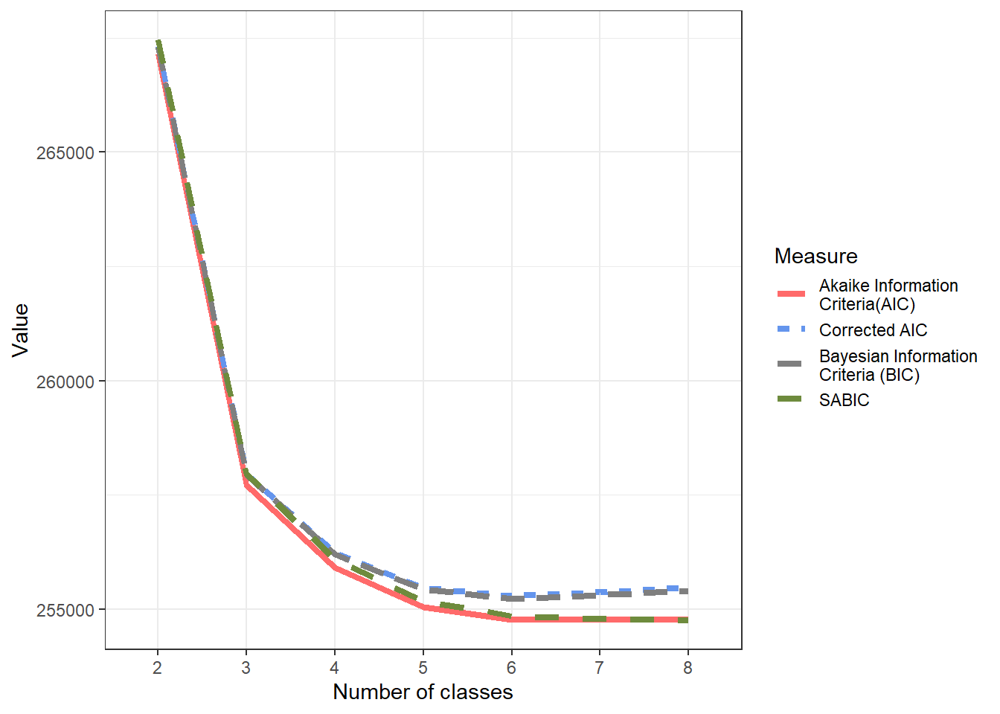
The best fit was obtained by the 6 class solution
Call:
glca(formula = f_preds3, data = mydata_preds3a, nclass = 6, n.init = 50,
decreasing = T, testiter = testiter, maxiter = 10000, seed = seed,
verbose = FALSE)
Manifest items : sus_principal_mod otras_sus1_mod otras_sus2_mod dg_trs_cons_sus_or freq_cons_sus_prin
Categories for manifest items :
Y = 1 Y = 2 Y = 3 Y = 4
sus_principal_mod 2 3
otras_sus1_mod 2 3
otras_sus2_mod 1 2 3
dg_trs_cons_sus_or 2 3
freq_cons_sus_prin 1 2 3 4
Model : Latent class analysis
Number of latent classes : 6
Number of observations : 39680
Number of parameters : 53
log-likelihood : -127336.3
G-squared : 27.66963
AIC : 254778.5
BIC : 255233.7
Marginal prevalences for latent classes :
Class 1 Class 2 Class 3 Class 4 Class 5 Class 6
0.08588 0.14764 0.05638 0.26256 0.29751 0.15004
Class prevalences by group :
Class 1 Class 2 Class 3 Class 4 Class 5 Class 6
ALL 0.08588 0.14764 0.05638 0.26256 0.29751 0.15004
Item-response probabilities :
sus_principal_mod
Y = 1 Y = 2
Class 1 1.0000 0.0000
Class 2 0.9529 0.0471
Class 3 0.0000 1.0000
Class 4 0.0000 1.0000
Class 5 0.0000 1.0000
Class 6 0.0000 1.0000
otras_sus1_mod
Y = 1 Y = 2
Class 1 0.0000 1.0000
Class 2 0.0000 1.0000
Class 3 0.0000 1.0000
Class 4 0.0000 1.0000
Class 5 1.0000 0.0000
Class 6 0.7699 0.2301
otras_sus2_mod
Y = 1 Y = 2 Y = 3
Class 1 0.7290 0.0000 0.2710
Class 2 0.5578 0.0000 0.4422
Class 3 0.1793 0.8207 0.0000
Class 4 0.2824 0.4782 0.2394
Class 5 0.4835 0.0000 0.5165
Class 6 0.7134 0.0000 0.2866
dg_trs_cons_sus_or
Y = 1 Y = 2
Class 1 0.6469 0.3531
Class 2 0.1311 0.8689
Class 3 0.4864 0.5136
Class 4 0.0761 0.9239
Class 5 0.0782 0.9218
Class 6 0.6592 0.3408
freq_cons_sus_prin
Y = 1 Y = 2 Y = 3 Y = 4
Class 1 0.0074 0.0767 0.7118 0.2041
Class 2 0.0030 0.0134 0.2496 0.7340
Class 3 0.0063 0.1018 0.5530 0.3389
Class 4 0.0011 0.0182 0.1821 0.7987
Class 5 0.0001 0.0214 0.2522 0.7264
Class 6 0.0126 0.1262 0.5659 0.2953| rn | log_lik | aic | caic | bic | entropy | res_df | gsq | sabic | boot_p_value |
|---|---|---|---|---|---|---|---|---|---|
| 2 | -133563.7 | 267161.3 | 267324.4 | 267307.4 | 1.00 | 78 | 12482.48 | 267461.1 | 0.00 |
| 3 | -128831.3 | 257714.5 | 257963.8 | 257937.8 | 0.92 | 69 | 3017.67 | 257957.8 | 0.00 |
| 4 | -127919.3 | 255908.5 | 256244.1 | 256209.1 | 0.81 | 60 | 1193.66 | 256095.3 | 0.00 |
| 5 | -127484.2 | 255056.4 | 255478.3 | 255434.3 | 0.77 | 51 | 323.50 | 255186.6 | 0.00 |
| 6 | -127336.3 | 254778.5 | 255286.7 | 255233.7 | 0.77 | 42 | 27.67 | 254852.3 | 0.11 |
| 7 | -127326.4 | 254776.9 | 255371.4 | 255309.4 | 0.67 | 33 | 7.99 | 254794.1 | 0.92 |
| 8 | -127323.7 | 254789.3 | 255470.1 | 255399.1 | 0.70 | 24 | 2.47 | 254750.0 | 0.99 |
Code
#https://rdrr.io/cran/glca/src/R/plot.glca.R
plot(eval(parse(text = paste0("lca30",best_model_lca3))), ask=F)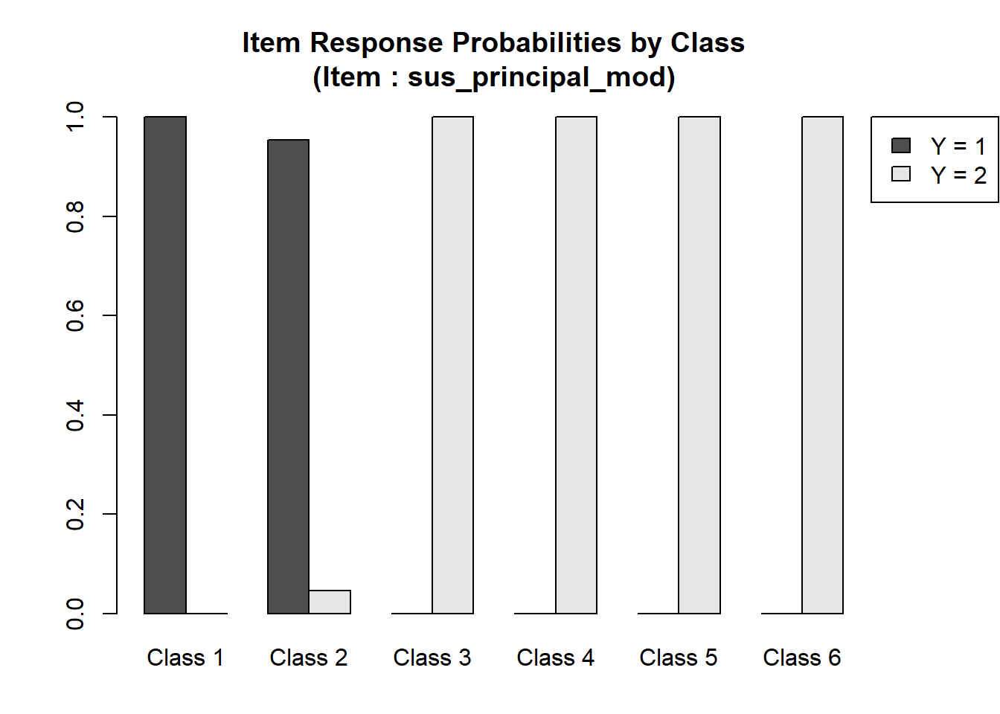
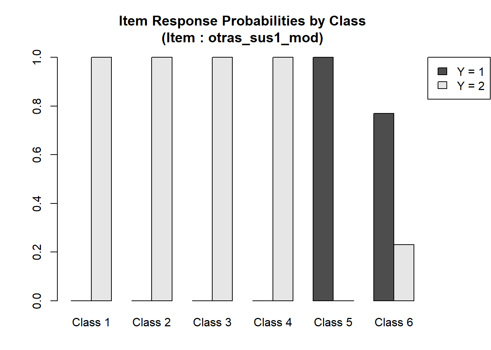
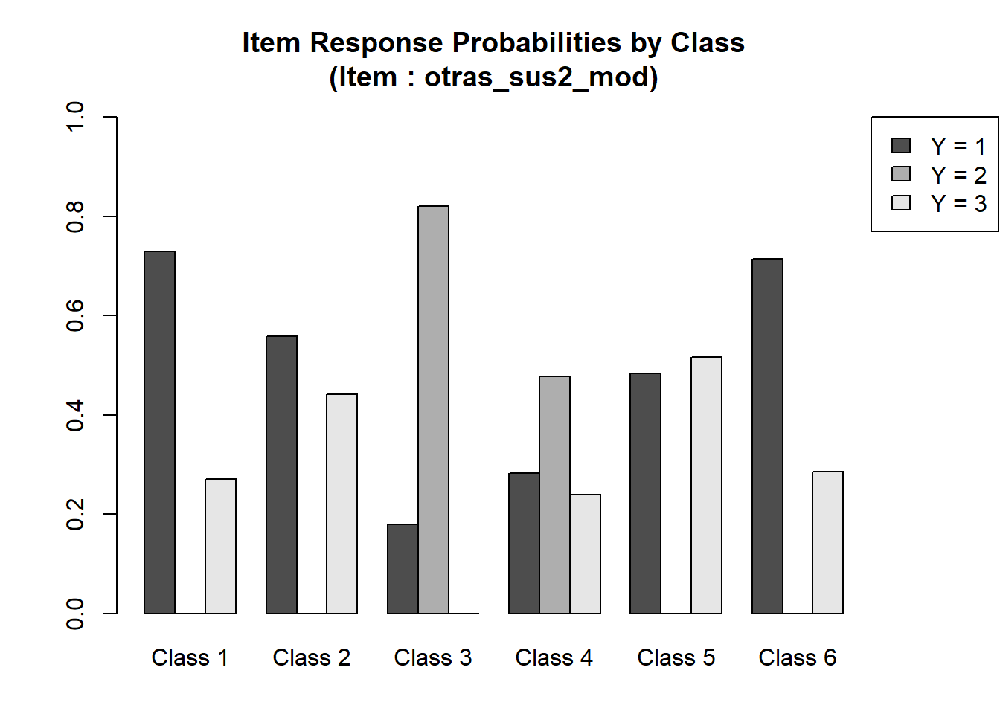
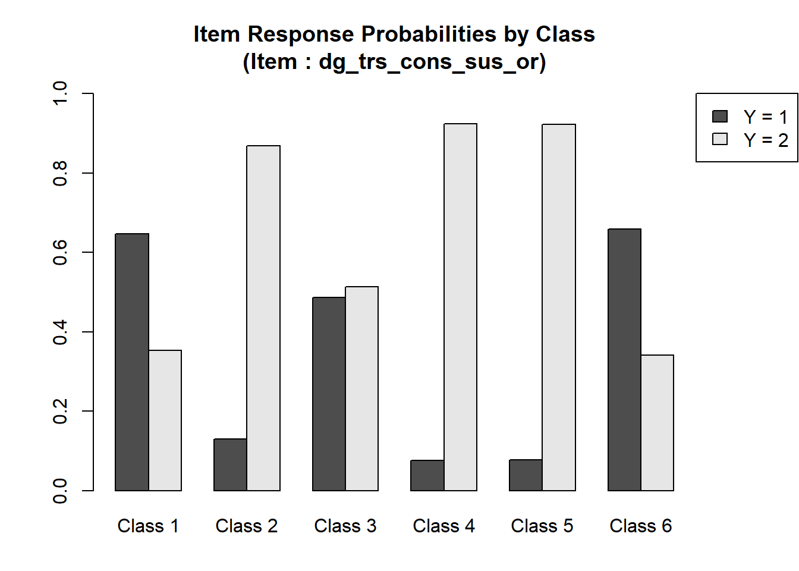
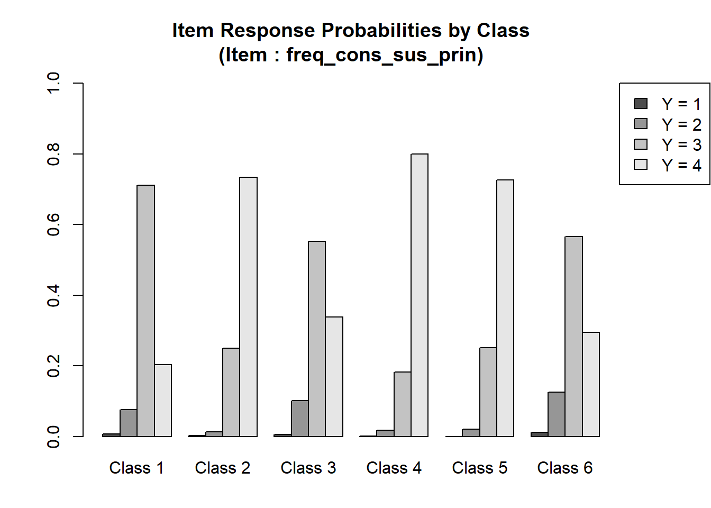
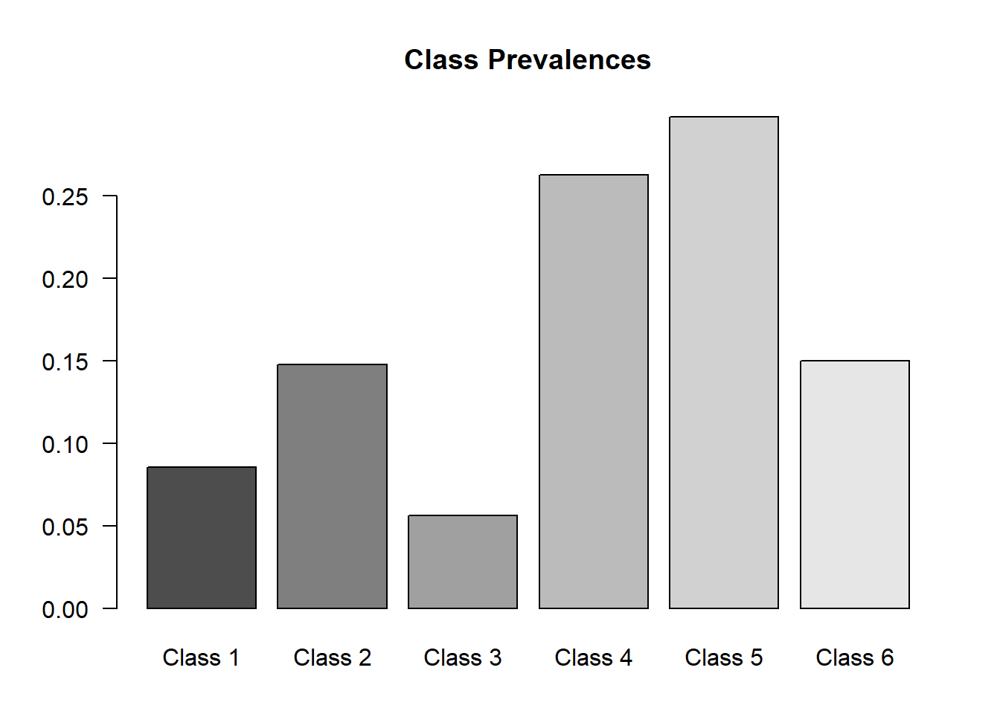
The following steps were involved in the following code:
- Analysis of the best LCA model’s parameter estimates.
- Visualization of the probabilities of different responses across categories.
- Extract the parameter ‘rho’ from the best model.
- Transform and format the extracted data for visualization.
- Read a correction table (
traductor_cats3) for categories. - Merge the model data with the correction table.
- The data is visualized using a ggplot2 stacked bar chart.
- Categories are represented with varying shades of grey.
- Each bar represents a variable from the model, and the sections of the bar represent the probability of each category for that variable.
- The bars are split by ‘class’ with the use of facets.
- The processed data (
lcmodel_glca3) containing variables and their probabilities across different categories is saved to an Excel file namedvariables_probabilities_in_category_glca_licit_ilicit.xlsx - The model’s parameters allow a deeper understanding of the probabilities across categories for different variables. The visualization provides a holistic view of the data for quick insights. The processed data is readily available for any further analysis or sharing.
Code
#table(mydata_preds3a$sus_principal_mod)
rho_glca3<-
do.call("bind_rows",best_model_glca3$param$rho$ALL) %>%
t() %>%
round(2) %>%
data.table::data.table(keep.rownames = T) %>%
magrittr::set_colnames(c("variables", paste0("Class",1:length(best_model_glca3$param$gamma)))) %>%
tidyr::separate(variables, into=c("var", "prob"), sep=".Y =")
lcmodel_glca3 <- reshape2::melt(rho_glca3, level=2) %>% dplyr::rename("class"="variable")
#test the number of categories
#table(mydata_preds3a$sus_principal_mod)
#table(mydata_preds3a$otras_sus1_mod)
traductor_cats3 <-
cbind.data.frame(
var= c(rep("sus_principal_mod",3), rep("otras_sus1_mod",3), rep("otras_sus2_mod",3), rep("freq_cons_sus_prin",4), rep("dg_trs_cons_sus_or",3)),
lvl= c(rep(c(1, 2, 3),3),1:4,1:3),
label= c(rep(c("none","Licit", "Illicit"),3), c("none", "Less than one day a week", "1 to 3 days a week", "4+ days a week"), c("none", "Hazardous consumption", "Drug dependence"))
) %>%
dplyr::group_by(var) %>%
dplyr::mutate(n=n()) %>%
dplyr::ungroup() %>%
#restricted the levels of the manifest variables to those that were available
dplyr::filter(dplyr::case_when(var=="sus_principal_mod" & !lvl %in% as.numeric(attr(table(mydata_preds3a$sus_principal_mod),"dimnames")[[1]])~ F, T~T )) %>%
dplyr::filter(dplyr::case_when(var=="otras_sus1_mod" & !lvl %in% as.numeric(attr(table(mydata_preds3a$otras_sus1_mod),"dimnames")[[1]])~ F, T~T )) %>%
dplyr::filter(dplyr::case_when(var=="otras_sus2_mod" & !lvl %in% as.numeric(attr(table(mydata_preds3a$otras_sus2_mod),"dimnames")[[1]])~ F, T~T )) %>%
dplyr::filter(dplyr::case_when(var=="freq_cons_sus_prin" & !lvl %in% as.numeric(attr(table(mydata_preds3a$freq_cons_sus_prin),"dimnames")[[1]])~ F, T~T )) %>%
dplyr::filter(dplyr::case_when(var=="dg_trs_cons_sus_or" & !lvl %in% as.numeric(attr(table(mydata_preds3a$dg_trs_cons_sus_or),"dimnames")[[1]])~ F, T~T )) %>%
dplyr::group_by(var) %>%
dplyr::mutate(lvl2=row_number()) %>%
dplyr::ungroup()
lcmodel_glca3<- lcmodel_glca3 %>%
dplyr::mutate(pr=as.numeric(gsub("[^0-9.]+", "", prob))) %>%
dplyr::left_join(traductor_cats3[,c("var", "lvl2", "label")], by= c("var"="var", "pr"="lvl2"))
#dplyr::mutate(CATEGORIA= dplyr::case_when(var=="AÑO" & prob==" 1"~"Perdidos", T~CATEGORIA))
lcmodel_glca3$text_label<-paste0("",lcmodel_glca3$label,"<br>%: ",scales::percent(lcmodel_glca3$value))
lcmodel_glca3$text_label2<-paste0("",lcmodel_glca3$label,"\n ",scales::percent(lcmodel_glca3$value))
zp33 <- ggplot(lcmodel_glca3,aes(x = factor(var, levels=c("sus_principal_mod", "otras_sus1_mod", "otras_sus2_mod","freq_cons_sus_prin","dg_trs_cons_sus_or"), labels= c("Primary\nsubstance", "Other\nsubs(1)", "Other\nsubs(2)","Freq.Subs.Use","Dg.Subs.Dep")), y = value, fill = factor(pr), label=text_label))
zp33 <- zp33 + geom_bar(stat = "identity", position = "stack")
zp33 <- zp33 + facet_grid(class ~ .)
zp33 <- zp33 + scale_fill_brewer(type="seq", palette="Greys", na.value = "white") +theme_bw()
zp33 <- zp33 + labs(y = "Response probabilities",
x = "",
fill ="Respone/ncategories")
zp33 <- zp33 + theme( axis.text.y=element_blank(),
axis.ticks.y=element_blank(),
panel.grid.major.y=element_blank())
zp33 <- zp33 + guides(fill = guide_legend(reverse=TRUE))
zp33 <- zp33 + theme(axis.text.x = element_text(angle = 30, hjust = 1))+
theme(legend.position= "none")
ggplotly(zp33, tooltip = c("text_label"))%>% plotly::layout(xaxis= list(showticklabels = T),height=600, width=800)Warning: Specifying width/height in layout() is now deprecated. Please specify in ggplotly() or plot_ly()
Selected Model
Code
ggsave("_fig3_LCA_distribuciones_glca_licit_ilicit.png",zp33, dpi= 600)
lcmodel_glca3 %>% rio::export("variables_probabilities_in_category_glca_licit_ilicit.xlsx")
zp33b <- ggplot(lcmodel_glca3,aes(x = factor(var, levels=c("sus_principal_mod", "otras_sus1_mod", "otras_sus2_mod","freq_cons_sus_prin","dg_trs_cons_sus_or"), labels= c("Primary\nsubstance", "Other\nsubs(1)", "Other\nsubs(2)","Freq.Subs.Use","Dg.Subs.Dep")), y = value, fill = factor(pr), label=text_label2))
zp33b <- zp33b + geom_bar(stat = "identity", position = "stack")
zp33b <- zp33b + facet_grid(class ~ .)
zp33b <- zp33b + scale_fill_brewer(type="seq", palette="Greys", na.value = "white") +theme_bw()
zp33b <- zp33b + labs(y = "Response probabilities",
x = "",
fill ="Respone/ncategories")
zp33b <- zp33b + scale_fill_manual(values=paste0("grey",seq(20,80, by=60/6))) +theme_bw()
zp33b <- zp33b + theme( axis.text.y=element_blank(),
axis.ticks.y=element_blank(),
panel.grid.major.y=element_blank())
zp33b <- zp33b + guides(fill = guide_legend(reverse=TRUE))
zp33b <- zp33b + theme(axis.text.x = element_text(angle = 30, hjust = 1))+
theme(legend.position= "none")
ggsave("zp33b.png",
zp33b+ ggrepel::geom_label_repel(#aes(#y=half, label=lab),
position = position_stack(vjust = 0.5),
size = 3,
max.iter = 1e6,
colour = "white", fontface = "bold")+ theme(legend.position= "none"),
height=13)#, fill = "white" --> dentro de label repel
lcmodel_glca3 %>% dplyr::select( class, var, label, value) %>% rio::export("tab_cond_pr_licit_illicit.xlsx")For ease of interpretation, we summarized the main characteristics of each class based on the probabilities provided:
1. Hazardous, Frequent Primary Licit Substance Use with Secondary Illicit Substance: Patients who primarily use a legal or licit substance in a manner that is considered hazardous and also consumes an illicit drug.
2. Dependence on, and Very Frequent Licit Substance Use with Secondary Illicit Substance: Individuals dependent on a legal substance which they use very frequently, and they also use an illicit substance.
3. Mixed Dependence, Frequent Broad-Spectrum Illicit Substance Use: Patients with mixed dependence symptoms and use a wide range of illegal drugs frequently.
4. Dependence on, and Very Frequent Illicit Substance Use with Secondary and Tertiary Mixed Substance Use: Patients dependent on and frequently use an illicit substance and also use another illicit drug. Additionally, they have a mixed pattern of using a third set of substances.
5. Dependence on, and Very Frequent Illicit Substance Use with Secondary Licit and Tertiary Mixed (Illicit vs. Absence) Substance Use: Patients who are dependent on an illicit drug which they use very often. They also use a licit substance and have a mixed pattern of using a third set of substances, alternating between illicit use and absence of use.
6. Hazardous, Frequent Illicit Substance Use with Secondary Licit Substance: Patients who use an illegal drug frequently in a hazardous manner and also use a legal substance.
(For more info, see this link)
Code
#_#_#_#_#_#_#_#_#_#_#_
#Classifying by posterior probs.
posterior_glca3_05_final<-
best_model_glca3$posterior$ALL %>%
dplyr::mutate_all(~ifelse(.>.5,1,0)) %>%
dplyr::mutate(final_05=dplyr::case_when(`Class 1`==1~1,`Class 2`==1~2, `Class 3`==1~3,`Class 4`==1~4, `Class 5`==1~5, `Class 6`==1~6))
posterior_glca3_07_final<-
best_model_glca3$posterior$ALL %>%
dplyr::mutate_all(~ifelse(.>.7,1,0)) %>%
dplyr::mutate(final_07=dplyr::case_when(`Class 1`==1~1,`Class 2`==1~2, `Class 3`==1~3,`Class 4`==1~4, `Class 5`==1~5, `Class 6`==1~6))
#Unite the posterior probabilities with the original database
bd_mydata_preds3_posterior3<-
cbind.data.frame(mydata_preds3a,final_07=posterior_glca3_07_final$final_07,final_05=posterior_glca3_05_final$final_05)
sum_prob_post<-
table(bd_mydata_preds3_posterior3$final_05,
bd_mydata_preds3_posterior3$final_07,exclude=NULL) %>%
data.frame() %>%
dplyr::filter(Freq>0) %>%
dplyr::mutate(Perc= scales::percent(Freq/sum(Freq))) %>%
dplyr::arrange(desc(Var2), Var1,desc(Freq)) %>%
dplyr::filter(!is.na(Var2)) %>%
summarise(sum=sum(parse_number(Perc)))
#Determining misclassification
table(bd_mydata_preds3_posterior3$final_05,
bd_mydata_preds3_posterior3$final_07,exclude=NULL) %>%
data.frame() %>%
dplyr::filter(Freq>0) %>%
dplyr::mutate(Perc= scales::percent(Freq/sum(Freq))) %>%
dplyr::arrange(desc(Var2), Var1,desc(Freq)) %>%
knitr::kable("markdown", caption="Posterior probabilities of Classification",
col.names= c("Classifying w/ .5", "Classifying w/ .7", "Frequency", "%"))| Classifying w/ .5 | Classifying w/ .7 | Frequency | % |
|---|---|---|---|
| 6 | 6 | 3258 | 8.21% |
| 5 | 5 | 10025 | 25.26% |
| 4 | 4 | 8898 | 22.42% |
| 3 | 3 | 670 | 1.69% |
| 2 | 2 | 3814 | 9.61% |
| 1 | 1 | 1949 | 4.91% |
| 1 | NA | 727 | 1.83% |
| 2 | NA | 2500 | 6.30% |
| 3 | NA | 178 | 0.45% |
| 4 | NA | 3111 | 7.84% |
| 5 | NA | 2754 | 6.94% |
| 6 | NA | 1194 | 3.01% |
| NA | NA | 602 | 1.52% |
When using classification criteria based on the model output, if at least 50% of an observation’s posterior probability is accounted for by a particular class, only 1.52% of the patients remain unclassified. However, if we raise this threshold to 70%, then 27.9% of the patients would not be assigned to any latent class. This observation aligns with relative entropy principles.
Code
require(easyalluvial)
require(parcats)
p_alluvial3<-
cbind.data.frame(subset(Base_fiscalia_v16_grant_23_24, !is.na(otras_sus1_mod)) %>% dplyr::mutate(across(c("sus_principal_mod", "otras_sus1_mod", "otras_sus2_mod","dg_trs_cons_sus_or","freq_cons_sus_prin"), ~ dplyr::case_when(is.na(.)~ "none", T~ .))) %>% dplyr::filter(!sus_principal_mod=="Other", !otras_sus1_mod=="Other", !otras_sus2_mod=="Other"),
final_07=posterior_glca3_07_final$final_07, final_05=posterior_glca3_05_final$final_05) %>%
dplyr::mutate(event_comp= factor(event_comp, levels=c(1,0), labels=c("Completion", "Non-completion"))) %>%
dplyr::mutate(final_05=factor(final_05, labels=c("C1: Hazardous Licit Usen\n+ Secondary Illicit", "C2: Dependent Frequent Licit\n+ Secondary Illicit", "C3: Mixed Dependence\n+ Broad Illicit Use", "C4: Dependent Frequent Illicit\n+ Mixed Secondary/Tertiary", "C5: Dependent Frequent Illicit\n+ Secondary Licit\n& Mixed Tertiary", "C6: Hazardous Frequent Illicit\n+ Secondary Licit"))) %>%
dplyr::select(
#sus_principal_mod,
# otras_sus1_mod,
# otras_sus2_mod,
final_05,
event_comp) %>%
easyalluvial::alluvial_wide(
bin=2,
bin_labels = c("ambulatory", "residential"),
order_levels= c("ambulatory", "residential","censored"),
fill_by = 'first_variable',
NA_label = "non-classified",
auto_rotate_xlabs = T,
stratum_label_size = 3,
colorful_fill_variable_stratum = F)+
theme_void()
p_alluvial3
Code
ggsave("glca_res_comp_off_licit_illicit.png",
p_alluvial3,
height=13)#, fill = "white" --> dentro de label repelCovariate: Tr. completion
- Adjusting by treatment completion status
Code
mydata_preds323<-
cbind.data.frame(subset(Base_fiscalia_v16_grant_23_24, !is.na(otras_sus1_mod)) %>% dplyr::mutate(across(c("sus_principal_mod", "otras_sus1_mod", "otras_sus2_mod","dg_trs_cons_sus_or","freq_cons_sus_prin"), ~ dplyr::case_when(is.na(.)~ "none", T~ .))) %>% dplyr::filter(!sus_principal_mod=="Other", !otras_sus1_mod=="Other", !otras_sus2_mod=="Other"),
final_07=posterior_glca3_07_final$final_07, final_05=posterior_glca3_05_final$final_05,
mydata_preds3a) %>%
janitor::clean_names() %>%
dplyr::mutate(event_comp= factor(event_comp, levels=c(1,0), labels=c("Completion", "Non-completion"))) %>%
dplyr::mutate(final_05=factor(final_05, labels=c("C1: Hazardous Licit Usen\n+ Secondary Illicit", "C2: Dependent Frequent Licit\n+ Secondary Illicit", "C3: Mixed Dependence\n+ Broad Illicit Use", "C4: Dependent Frequent Illicit\n+ Mixed Secondary/Tertiary", "C5: Dependent Frequent Illicit\n+ Secondary Licit\n& Mixed Tertiary", "C6: Hazardous Frequent Illicit\n+ Secondary Licit")))
f_preds23_adj<- item(sus_principal_mod_2, otras_sus1_mod_2, otras_sus2_mod_2, dg_trs_cons_sus_or_2, freq_cons_sus_prin_2) ~ event_comp
lca3062 <- glca(f_preds23_adj, data = mydata_preds323, nclass = 6, seed = seed, verbose = FALSE, n.init = 5e1, decreasing=T, maxiter = 1e4, testiter = testiter)
gof_lca_adj<- gofglca(lca3062, test="boot", nboot=n_bootstrap, seed=2125)
df_lca3062<-
data.frame(coef(lca3062)) %>% rownames_to_column("term") %>% janitor::clean_names() %>%
rownames_to_column("rowname") %>%
gather(key = "key", value = "value", -rowname) %>%
spread(key = "rowname", value = "value") %>%
set_names(as.character(unlist(tail(., 1)))) %>%
slice(-n()) %>%
dplyr::mutate(term=strsplit(sub('^(.*?_.*?_.*?)_(.*)$', '\\1,\\2', term), ',')) %>%
separate(col=term,into = c("prefix", "suffix"), sep = ", ", extra = "merge") %>%
dplyr::mutate(across(c("prefix", "suffix"), ~gsub('\\(|"|\\)', "", .)))Class 1 / 6 :
Odds Ratio Coefficient Std. Error t value Pr(>|t|)
(Intercept) 1.53077 0.42577 0.20099 2.118 0.03600
event_compNon-completion 1.27869 0.24584 0.07545 3.258 0.00142
(Intercept) *
event_compNon-completion **
---
Signif. codes: 0 '***' 0.001 '**' 0.01 '*' 0.05 '.' 0.1 ' ' 1
Class 2 / 6 :
Odds Ratio Coefficient Std. Error t value Pr(>|t|)
(Intercept) 0.5184 -0.6570 0.3187 -2.061 0.0412
event_compNon-completion 1.9554 0.6706 0.1044 6.426 2.15e-09
(Intercept) *
event_compNon-completion ***
---
Signif. codes: 0 '***' 0.001 '**' 0.01 '*' 0.05 '.' 0.1 ' ' 1
Class 3 / 6 :
Odds Ratio Coefficient Std. Error t value Pr(>|t|)
(Intercept) 2.02959 0.70783 0.13749 5.148 9.24e-07
event_compNon-completion 1.86896 0.62538 0.06306 9.916 < 2e-16
(Intercept) ***
event_compNon-completion ***
---
Signif. codes: 0 '***' 0.001 '**' 0.01 '*' 0.05 '.' 0.1 ' ' 1
Class 4 / 6 :
Odds Ratio Coefficient Std. Error t value Pr(>|t|)
(Intercept) 2.58440 0.94949 0.13079 7.260 2.91e-11
event_compNon-completion 1.63761 0.49324 0.06089 8.101 3.10e-13
(Intercept) ***
event_compNon-completion ***
---
Signif. codes: 0 '***' 0.001 '**' 0.01 '*' 0.05 '.' 0.1 ' ' 1
Class 5 / 6 :
Odds Ratio Coefficient Std. Error t value Pr(>|t|)
(Intercept) 1.28567 0.25128 0.16873 1.489 0.139
event_compNon-completion 1.44113 0.36543 0.07279 5.020 1.63e-06
(Intercept)
event_compNon-completion ***
---
Signif. codes: 0 '***' 0.001 '**' 0.01 '*' 0.05 '.' 0.1 ' ' 1Code
df_lca30622<-
df_lca3062%>%
dplyr::filter(suffix == "coefficient" | suffix == "std_error") %>%
pivot_wider(names_from=suffix, values_from = c("(Intercept)", "event_compNon-completion")) %>%
dplyr::mutate_at(2:5, ~as.numeric(.)) %>%
dplyr::mutate(
lower_log_or_int = `(Intercept)_coefficient` - 1.96 * `(Intercept)_std_error`,
upper_log_or_int = `(Intercept)_coefficient` + 1.96 * `event_compNon-completion_std_error`,
lower_log_or_comp = `event_compNon-completion_coefficient` - 1.96 * `event_compNon-completion_std_error`,
upper_log_or_comp = `event_compNon-completion_coefficient` + 1.96 * `event_compNon-completion_std_error`) %>%
dplyr::rename("int_coef"="(Intercept)_coefficient", "int_std_error"="(Intercept)_std_error", "comp_coef"="event_compNon-completion_coefficient","comp_std_error"="event_compNon-completion_std_error") %>%
dplyr::select(prefix,#t_coef int_std_error comp_coef comp_std_error
int_coef, int_std_error, comp_coef, comp_std_error,
lower_log_or_int, upper_log_or_int, lower_log_or_comp, upper_log_or_comp)Code
# List of call classes
call_classes <- c("call_class1_6", "call_class2_6", "call_class3_6", "call_class4_6", "call_class5_6")
# Use map_df to loop through each call class and apply the summarise logic
#Long, S. and Freese, J. (2014) Regression Models for Categorical Dependent Variables Using Stata. 3rd Edition, Stata Press, College Station.
#https://www.ncbi.nlm.nih.gov/pmc/articles/PMC9041638/ #eq 3
#$\frac{exp(\alpha+\sum_{k=1}^{K}\beta_{mk}X_{ik})}{1+exp(\alpha+\sum_{k=1}^{K}\beta_{mk}X_{ik})}$
#https://www3.nd.edu/~rwilliam/stats3/Mlogit1.pdf
result <- map_df(call_classes, ~ {
df_lca30622 %>%
dplyr::mutate(int_comp_coef=int_coef+comp_coef) %>%
dplyr::summarise(call_class = .x,
nom = sum(ifelse(prefix == .x, exp(int_comp_coef), 0)),
den = sum(exp(int_comp_coef)),
prob = nom/(1+den))
})
result_lo <- map_df(call_classes, ~ {
df_lca30622 %>%
dplyr::mutate(int_comp_coef=lower_log_or_int+lower_log_or_comp) %>%
dplyr::summarise(call_class = .x,
nom = sum(ifelse(prefix == .x, exp(int_comp_coef), 0)),
den = sum(exp(int_comp_coef)),
prob = nom/(1+den))
})
result_hi <- map_df(call_classes, ~ {
df_lca30622 %>%
dplyr::mutate(int_comp_coef=upper_log_or_int+upper_log_or_comp) %>%
dplyr::summarise(call_class = .x,
nom = sum(ifelse(prefix == .x, exp(int_comp_coef), 0)),
den = sum(exp(int_comp_coef)),
prob = nom/(1+den))
})
df_lca30622_probs<-
cbind.data.frame(
est=c(result$prob, 1/(1+unique(result$den))),
lo=c(result_lo$prob, 1/(1+unique(result_lo$den))),
hi=c(result_hi$prob, 1/(1+unique(result_hi$den))))
f <- cbind(sus_principal_mod_2, otras_sus1_mod_2, otras_sus2_mod_2, dg_trs_cons_sus_or_2, freq_cons_sus_prin_2) ~ event_comp
gss.lc2 <- poLCA(f,mydata_preds323,nclass=6, nrep= testiter, maxiter= 1e5, verbose=F, calc.se=T)Warning in sqrt(diag(VCE.beta)): Se han producido NaNs
Warning in sqrt(diag(VCE.mix)): Se han producido NaNs
Code
gss.lc2$eflag[1] TRUECode
invisible("no llegan a lo mismo")Code
rho_glca3_adj<-
do.call("bind_rows",lca3062$param$rho$ALL) %>%
t() %>%
round(2) %>%
data.table::data.table(keep.rownames = T) %>%
magrittr::set_colnames(c("variables", paste0("Class",1:dim(lca3062$param$gamma[[1]])[[2]]))) %>%
tidyr::separate(variables, into=c("var", "prob"), sep=".Y =")
lcmodel_glca3_adj <- reshape2::melt(rho_glca3_adj, level=2) %>% dplyr::rename("class"="variable")
lcmodel_glca3_adj<- lcmodel_glca3_adj %>%
dplyr::mutate(pr=as.numeric(gsub("[^0-9.]+", "", prob))) %>%
dplyr::left_join(traductor_cats3[,c("var", "lvl2", "label")] %>% dplyr::mutate(var= paste0(var, "_2")), by= c("var"="var", "pr"="lvl2"))
#dplyr::mutate(CATEGORIA= dplyr::case_when(var=="AÑO" & prob==" 1"~"Perdidos", T~CATEGORIA))
lcmodel_glca3_adj$text_label<-paste0("",lcmodel_glca3_adj$label,"<br>%: ",scales::percent(lcmodel_glca3_adj$value))
lcmodel_glca3_adj$text_label2<-paste0("",lcmodel_glca3_adj$label,"\n ",scales::percent(lcmodel_glca3_adj$value))
zp332 <- ggplot(lcmodel_glca3_adj,aes(x = factor(var, levels=c("sus_principal_mod_2", "otras_sus1_mod_2", "otras_sus2_mod_2","freq_cons_sus_prin_2","dg_trs_cons_sus_or_2"), labels= c("Primary\nsubstance", "Other\nsubs(1)", "Other\nsubs(2)","Freq.Subs.Use","Dg.Subs.Dep")), y = value, fill = factor(pr), label=text_label))
zp332 <- zp332 + geom_bar(stat = "identity", position = "stack")
zp332 <- zp332 + facet_grid(class ~ .)
zp332 <- zp332 + scale_fill_brewer(type="seq", palette="Greys", na.value = "white") +theme_bw()
zp332 <- zp332 + labs(y = "Response probabilities",
x = "",
fill ="Respone/ncategories")
zp332 <- zp332 + theme( axis.text.y=element_blank(),
axis.ticks.y=element_blank(),
panel.grid.major.y=element_blank())
zp332 <- zp332 + guides(fill = guide_legend(reverse=TRUE))
zp332 <- zp332 + theme(axis.text.x = element_text(angle = 30, hjust = 1))+
theme(legend.position= "none")
ggplotly(zp332, tooltip = c("text_label"))%>% plotly::layout(xaxis= list(showticklabels = T),height=600, width=800)Warning: Specifying width/height in layout() is now deprecated. Please specify in ggplotly() or plot_ly()
Selected Model (adjusted)
Code
ggsave("_fig3_adj_LCA_distribuciones_glca_licit_illicit_adj.png",zp32, dpi= 600)
lcmodel_glca %>% rio::export("variables_probabilities_in_category_glca_licit_illicit_adj.xlsx")
zp32b <- ggplot(lcmodel_glca3_adj,aes(x = factor(var, levels=c("sus_principal_mod_2", "otras_sus1_mod_2", "otras_sus2_mod_2","freq_cons_sus_prin_2","dg_trs_cons_sus_or_2"), labels= c("Primary\nsubstance", "Other\nsubs(1)", "Other\nsubs(2)","Freq.Subs.Use","Dg.Subs.Dep")), y = value, fill = factor(pr), label=text_label2))
zp32b <- zp32b + geom_bar(stat = "identity", position = "stack")
zp32b <- zp32b + facet_grid(class ~ .)
zp32b <- zp32b + scale_fill_brewer(type="seq", palette="Greys", na.value = "white") +theme_bw()
zp32b <- zp32b + labs(y = "Response probabilities",
x = "",
fill ="Respone/ncategories")
zp32b <- zp32b + scale_fill_manual(values=paste0("grey",seq(20,80, by=60/6))) +theme_bw()
zp32b <- zp32b + theme( axis.text.y=element_blank(),
axis.ticks.y=element_blank(),
panel.grid.major.y=element_blank())
zp32b <- zp32b + guides(fill = guide_legend(reverse=TRUE))
zp32b <- zp32b + theme(axis.text.x = element_text(angle = 30, hjust = 1))+
theme(legend.position= "none")
ggsave("zp23.png",
zp32b+ ggrepel::geom_label_repel(#aes(#y=half, label=lab),
position = position_stack(vjust = 0.5),
size = 3,
max.iter = 1e6,
colour = "white", fontface = "bold")+ theme(legend.position= "none"),
height=13)#, fill = "white" --> dentro de label repel
lcmodel_glca3_adj %>% dplyr::select( class, var, label, value) %>% rio::export("tab_cond_pr_licit_illicit_adj.xlsx")Bivariate
Code
variables_comp3 <- c("porc_pobr",
"clas_r",
"fis_comorbidity_icd_10",
"edad_b_ap_top_num",
"comorbidity_icd_10",
"con_quien_vive_joel",
"sus_ini_mod",
"estado_conyugal_2",
"compromiso_biopsicosocial",
"macrozona",
"escolaridad_rec",
"event_comp"
)
tbone_desc_merge_grant_23_24_licit_illicit<-
CreateTableOne(vars= variables_comp3,
data= cbind.data.frame(subset(Base_fiscalia_v16_grant_23_24, !is.na(otras_sus1_mod)) %>% dplyr::mutate(across(c("sus_principal_mod", "otras_sus1_mod", "otras_sus2_mod","dg_trs_cons_sus_or","freq_cons_sus_prin"), ~ dplyr::case_when(is.na(.)~ "none", T~ .))) %>% dplyr::filter(!sus_principal_mod=="Other", !otras_sus1_mod=="Other", !otras_sus2_mod=="Other"),
final_07=posterior_glca3_07_final$final_07, final_05=posterior_glca3_05_final$final_05) %>%
dplyr::mutate(event_comp= factor(event_comp, levels=c(1,0), labels=c("Completion", "Non-completion"))) %>%
dplyr::mutate(final_05=factor(final_05, labels=c("C1: Hazardous Licit Usen\n+ Secondary Illicit", "C2: Dependent Frequent Licit\n+ Secondary Illicit", "C3: Mixed Dependence\n+ Broad Illicit Use", "C4: Dependent Frequent Illicit\n+ Mixed Secondary/Tertiary", "C5: Dependent Frequent Illicit\n+ Secondary Licit\n& Mixed Tertiary", "C6: Hazardous Frequent Illicit\n+ Secondary Licit"))),
factorVars = setdiff(variables_comp3, c("edad_b_ap_top_num", "porc_pobr")),
smd=T,
strata="final_05",
addOverall = T,
includeNA=T,
test=T)#Code
#define a table
as.data.frame.TableOne <- function(x, ...) {capture.output(print(x,
showAllLevels = TRUE, ...) -> x)
y <- as.data.frame(x)
y$characteristic <- dplyr::na_if(rownames(x), "")
y <- y %>%
fill(characteristic, .direction = "down") %>%
dplyr::select(characteristic, everything())
rownames(y) <- NULL
y}
#_#_#_#_#_#_#_#_#_#_#_#_#_#_#_#_#_#_#_#_#_#_#_#_#_#_#_#_#_#_#_#_#_#_#_
#_#_#_#_#_#_#_#_#_#_#_#_#_#_#_#_#_#_#_#_#_#_#_#_#_#_#_#_#_#_#_#_#_#_#_
as.data.frame.TableOne(tbone_desc_merge_grant_23_24_licit_illicit, smd=T, nonnormal= T)%>%
dplyr::mutate(char2=characteristic) %>%
tidyr::fill(char2) %>%
dplyr::select(char2,everything()) %>%
dplyr::mutate(level=ifelse(is.na(level),"[Missing]",level)) %>%
dplyr::mutate(char2=dplyr::case_when(characteristic=="NA"~NA_character_,T~as.character(characteristic))) %>%
format_cells(1, 1:length(names(.)), "bold") %>%
dplyr::select(-1) %>%
knitr::kable(size=10, format="html",caption= "Summary descriptives, Latent classes", escape=T) %>%
kableExtra::kable_classic() %>%
kableExtra::scroll_box(width = "500px", height = "400px")| characteristic | level | Overall | C1: Hazardous Licit Usen + Secondary Illicit | C2: Dependent Frequent Licit + Secondary Illicit | C3: Mixed Dependence + Broad Illicit Use | C4: Dependent Frequent Illicit + Mixed Secondary/Tertiary | C5: Dependent Frequent Illicit + Secondary Licit & Mixed Tertiary | C6: Hazardous Frequent Illicit + Secondary Licit | p | test | SMD |
|---|---|---|---|---|---|---|---|---|---|---|---|
| **n** | **39680** | **2676** | **6314** | **848** | **12009** | **12779** | **4452** | ||||
| porc_pobr (median [IQR]) | 0.09 [0.06, 0.14] | 0.09 [0.06, 0.14] | 0.09 [0.06, 0.14] | 0.09 [0.07, 0.13] | 0.10 [0.07, 0.14] | 0.09 [0.06, 0.13] | 0.09 [0.06, 0.13] | <0.001 | nonnorm | 0.039 | |
| clas_r (%) | Mixta | 3862 ( 9.7) | 414 (15.5) | 608 ( 9.6) | 93 (11.0) | 1029 ( 8.6) | 1147 ( 9.0) | 515 (11.6) | <0.001 | 0.151 | |
| clas_r (%) | Rural | 2778 ( 7.0) | 341 (12.7) | 546 ( 8.6) | 53 ( 6.2) | 697 ( 5.8) | 778 ( 6.1) | 325 ( 7.3) | |||
| clas_r (%) | Urbana | 33040 (83.3) | 1921 (71.8) | 5160 (81.7) | 702 (82.8) | 10283 (85.6) | 10854 (84.9) | 3612 (81.1) | |||
| fis_comorbidity_icd_10 (%) | Without physical comorbidity | 14982 (37.8) | 1002 (37.4) | 2194 (34.7) | 317 (37.4) | 4548 (37.9) | 4955 (38.8) | 1760 (39.5) | <0.001 | 0.103 | |
| fis_comorbidity_icd_10 (%) | Diagnosis unknown (under study) | 22550 (56.8) | 1545 (57.7) | 3591 (56.9) | 503 (59.3) | 6883 (57.3) | 7111 (55.6) | 2542 (57.1) | |||
| fis_comorbidity_icd_10 (%) | One or more | 2148 ( 5.4) | 129 ( 4.8) | 529 ( 8.4) | 28 ( 3.3) | 578 ( 4.8) | 713 ( 5.6) | 150 ( 3.4) | |||
| edad_b_ap_top_num (median [IQR]) | 32.64 [26.75, 39.25] | 35.64 [27.07, 43.09] | 37.72 [31.35, 46.07] | 27.80 [24.68, 33.44] | 30.36 [25.76, 35.41] | 33.56 [27.78, 40.74] | 32.17 [26.30, 39.58] | <0.001 | nonnorm | 0.471 | |
| comorbidity_icd_10 (%) | Diagnosis unknown (under study) | 8465 (21.3) | 460 (17.2) | 1125 (17.8) | 162 (19.1) | 2987 (24.9) | 2772 (21.7) | 836 (18.8) | <0.001 | 0.164 | |
| comorbidity_icd_10 (%) | One | 16332 (41.2) | 1088 (40.7) | 2755 (43.6) | 295 (34.8) | 4865 (40.5) | 5368 (42.0) | 1714 (38.5) | |||
| comorbidity_icd_10 (%) | Two or more | 808 ( 2.0) | 33 ( 1.2) | 169 ( 2.7) | 17 ( 2.0) | 254 ( 2.1) | 292 ( 2.3) | 39 ( 0.9) | |||
| comorbidity_icd_10 (%) | Without psychiatric comorbidity | 14075 (35.5) | 1095 (40.9) | 2265 (35.9) | 374 (44.1) | 3903 (32.5) | 4347 (34.0) | 1863 (41.8) | |||
| con_quien_vive_joel (%) | Alone | 3337 ( 8.4) | 274 (10.2) | 778 (12.3) | 38 ( 4.5) | 856 ( 7.1) | 1093 ( 8.6) | 260 ( 5.8) | <0.001 | 0.225 | |
| con_quien_vive_joel (%) | Family of origin | 18217 (45.9) | 999 (37.3) | 2546 (40.3) | 423 (49.9) | 6341 (52.8) | 5724 (44.8) | 1880 (42.2) | |||
| con_quien_vive_joel (%) | Others | 3520 ( 8.9) | 205 ( 7.7) | 666 (10.5) | 71 ( 8.4) | 1082 ( 9.0) | 1158 ( 9.1) | 301 ( 6.8) | |||
| con_quien_vive_joel (%) | With couple/children | 14606 (36.8) | 1198 (44.8) | 2324 (36.8) | 316 (37.3) | 3730 (31.1) | 4804 (37.6) | 2011 (45.2) | |||
| sus_ini_mod (%) | Alcohol | 21988 (55.4) | 2249 (84.0) | 5138 (81.4) | 382 (45.0) | 3926 (32.7) | 7687 (60.2) | 2492 (56.0) | <0.001 | 0.581 | |
| sus_ini_mod (%) | Cocaína | 1512 ( 3.8) | 41 ( 1.5) | 87 ( 1.4) | 28 ( 3.3) | 556 ( 4.6) | 499 ( 3.9) | 250 ( 5.6) | |||
| sus_ini_mod (%) | Marihuana | 13855 (34.9) | 334 (12.5) | 909 (14.4) | 393 (46.3) | 6697 (55.8) | 3708 (29.0) | 1422 (31.9) | |||
| sus_ini_mod (%) | Otros | 647 ( 1.6) | 18 ( 0.7) | 78 ( 1.2) | 11 ( 1.3) | 219 ( 1.8) | 247 ( 1.9) | 67 ( 1.5) | |||
| sus_ini_mod (%) | Pasta Base | 1549 ( 3.9) | 22 ( 0.8) | 72 ( 1.1) | 31 ( 3.7) | 580 ( 4.8) | 615 ( 4.8) | 193 ( 4.3) | |||
| sus_ini_mod (%) | [Missing] | 129 ( 0.3) | 12 ( 0.4) | 30 ( 0.5) | 3 ( 0.4) | 31 ( 0.3) | 23 ( 0.2) | 28 ( 0.6) | |||
| estado_conyugal_2 (%) | Married/Shared living arrangements | 12022 (30.3) | 995 (37.2) | 2024 (32.1) | 251 (29.6) | 3020 (25.1) | 3972 (31.1) | 1603 (36.0) | <0.001 | 0.207 | |
| estado_conyugal_2 (%) | Separated/Divorced | 3401 ( 8.6) | 261 ( 9.8) | 853 (13.5) | 45 ( 5.3) | 731 ( 6.1) | 1094 ( 8.6) | 372 ( 8.4) | |||
| estado_conyugal_2 (%) | Single | 23960 (60.4) | 1402 (52.4) | 3359 (53.2) | 549 (64.7) | 8196 (68.2) | 7612 (59.6) | 2445 (54.9) | |||
| estado_conyugal_2 (%) | Widower | 249 ( 0.6) | 10 ( 0.4) | 69 ( 1.1) | 2 ( 0.2) | 49 ( 0.4) | 90 ( 0.7) | 27 ( 0.6) | |||
| estado_conyugal_2 (%) | [Missing] | 48 ( 0.1) | 8 ( 0.3) | 9 ( 0.1) | 1 ( 0.1) | 13 ( 0.1) | 11 ( 0.1) | 5 ( 0.1) | |||
| compromiso_biopsicosocial (%) | 1-Mild | 2784 ( 7.0) | 511 (19.1) | 335 ( 5.3) | 141 (16.6) | 349 ( 2.9) | 585 ( 4.6) | 800 (18.0) | <0.001 | 0.534 | |
| compromiso_biopsicosocial (%) | 2-Moderate | 22773 (57.4) | 1893 (70.7) | 3697 (58.6) | 589 (69.5) | 6141 (51.1) | 6953 (54.4) | 3101 (69.7) | |||
| compromiso_biopsicosocial (%) | 3-Severe | 13382 (33.7) | 220 ( 8.2) | 2170 (34.4) | 96 (11.3) | 5320 (44.3) | 5017 (39.3) | 438 ( 9.8) | |||
| compromiso_biopsicosocial (%) | [Missing] | 741 ( 1.9) | 52 ( 1.9) | 112 ( 1.8) | 22 ( 2.6) | 199 ( 1.7) | 224 ( 1.8) | 113 ( 2.5) | |||
| macrozona (%) | Center | 30550 (77.0) | 1914 (71.5) | 4630 (73.3) | 660 (77.8) | 9486 (79.0) | 9867 (77.2) | 3519 (79.0) | <0.001 | 0.199 | |
| macrozona (%) | North | 6295 (15.9) | 384 (14.3) | 823 (13.0) | 156 (18.4) | 1917 (16.0) | 2194 (17.2) | 716 (16.1) | |||
| macrozona (%) | South | 2825 ( 7.1) | 376 (14.1) | 860 (13.6) | 32 ( 3.8) | 603 ( 5.0) | 716 ( 5.6) | 215 ( 4.8) | |||
| macrozona (%) | [Missing] | 10 ( 0.0) | 2 ( 0.1) | 1 ( 0.0) | 0 ( 0.0) | 3 ( 0.0) | 2 ( 0.0) | 2 ( 0.0) | |||
| escolaridad_rec (%) | 1-More than high school | 7101 (17.9) | 572 (21.4) | 1343 (21.3) | 153 (18.0) | 1870 (15.6) | 2224 (17.4) | 855 (19.2) | <0.001 | 0.110 | |
| escolaridad_rec (%) | 2-Completed high school or less | 22804 (57.5) | 1457 (54.4) | 3395 (53.8) | 522 (61.6) | 7114 (59.2) | 7302 (57.1) | 2636 (59.2) | |||
| escolaridad_rec (%) | 3-Completed primary school or less | 9656 (24.3) | 633 (23.7) | 1548 (24.5) | 171 (20.2) | 3006 (25.0) | 3215 (25.2) | 946 (21.2) | |||
| escolaridad_rec (%) | [Missing] | 119 ( 0.3) | 14 ( 0.5) | 28 ( 0.4) | 2 ( 0.2) | 19 ( 0.2) | 38 ( 0.3) | 15 ( 0.3) | |||
| event_comp (%) | Completion | 7461 (18.8) | 700 (26.2) | 1410 (22.3) | 144 (17.0) | 1934 (16.1) | 2325 (18.2) | 857 (19.2) | <0.001 | 0.111 | |
| event_comp (%) | Non-completion | 32219 (81.2) | 1976 (73.8) | 4904 (77.7) | 704 (83.0) | 10075 (83.9) | 10454 (81.8) | 3595 (80.8) |
Code
as.data.frame.TableOne(tbone_desc_merge_grant_23_24_licit_illicit, smd=T, nonnormal= T)%>%
dplyr::mutate(char2=characteristic) %>%
tidyr::fill(char2) %>%
dplyr::select(char2,everything()) %>%
dplyr::mutate(level=ifelse(is.na(level),"[Missing]",level)) %>%
dplyr::mutate(char2=dplyr::case_when(characteristic=="NA"~NA_character_,T~as.character(characteristic))) %>%
format_cells(1, 1:length(names(.)), "bold") %>%
dplyr::select(-1) %>% rio::export("tab_car_licit_illicit.xlsx")Code
#RUral: +c1, - c4 y c3; com fis: c2 + 1o>; edad: c3 <; c2 >; com psi: +c3, c6 y c1, -c4 y c5; con quien vive: -c3 y c6 , +c2 alone, c4+ con fam origen, c1+ con pareja e hijos; sus ini mod: c1 y c2, +alcohol, coc + c6, mar -c1 y c2, +c4, pbc- c1 y c2; casado -c4, +c1 y c6, separado +c2, soltero -c1 y c2 y c6, +c4 y c3; biopsicosocial: severo -c1 y c6 y c3, leve +c1 y c6 y c3; macrozona: norte -c2 sur +c1 y c2; escolaridad: + media +c1 y c2, -primaria -c3 y media completa +c3; completa + c1 y c2, -c4, no completa -c1C1: Hazardous Licit Use + Secondary Illicit: Highest percentage of individuals from mixed (Mixta) areas at 15.5% and rural areas at 12.7%; Physical Comorbidity: 37.4% without physical comorbidity; Age: Median age of 35.64; Psychiatric Comorbidity: 40.9% without psychiatric comorbidity; Living Arrangement: 10.2% living alone; Substance Initiation: 84.0% initiated with alcohol; Marital Status: 37.2% in married/shared living arrangements; Biopsychosocial Commitment: 19.1% with mild commitment and 70.7% with moderate commitment; Region: 71.5% from the center region; Education Level: 21.4% with more than high school education; Event Completion: 26.2% completion. Simply put, C1 seems to represent a group with hazardous licit use, living in mixed or rural areas, and having a higher educational background.
C2: Dependent Frequent Licit + Secondary Illicit: Residential Area: 9.6% from mixed areas. Living Arrangement: 12.3% living alone. Substance Initiation: 81.4% initiated with alcohol. Age: Median age of 37.72. Biopsychosocial Commitment: 58.6% with moderate commitment. In summary, C1 seems to represent a group with hazardous licit use, living in mixed or rural areas, and having a higher educational background. Summarizing, C2 is characterized by dependent frequent licit use, living alone, and predominantly initiating with alcohol.
C3: Mixed Dependence + Broad Illicit Use: Physical Comorbidity: 59.3% with diagnosis unknown (under study) and 8.4% with one or more physical comorbidities. Psychiatric Comorbidity: 43.6% with one psychiatric comorbidity. Age: Median age of 27.80. Substance Initiation: 46.3% initiated with marijuana. Education Level: 61.6% completed high school or less. C3 represents an older group with mixed dependence and broad illicit use, having multiple comorbidities.
C4: Dependent Frequent Illicit + Mixed Secondary/Tertiary: Residential Area: 85.6% urban. Psychiatric Comorbidity: 24.9% with diagnosis unknown (under study). Living Arrangement: 52.8% live with their family of origin. Substance Initiation: 55.8% initiated with marijuana. Marital Status: 68.2% singles. Biopsychosocial Commitment: 44.3% with severe commitment. Region: 79.0% from the center region. Poverty index of the municipallity/commune of residence: Median of 0.10. C4 is characterized by dependent frequent illicit use, urban living, initiation with marijuana, and severe biopsychosocial commitment.
C5: Dependent Frequent Illicit + Secondary Licit & Mixed Tertiary: Residential Area: 84.9% urban. Substance Initiation: 60.2% initiated with alcohol and 29.0% with marijuana. Biopsychosocial Commitment: 54.4% with moderate commitment. Region: 77.2% from the center region. C5 represents a group with dependent frequent illicit use, urban living, and moderate biopsychosocial commitment.
C6: Hazardous Frequent Illicit + Secondary Licit: Physical Comorbidity: 39.5% without physical comorbidity. Psychiatric Comorbidity: 41.8% without psychiatric comorbidity. Living Arrangement: 45.2% living with a couple/children. Marital Status: 36.0% in married/shared living arrangements. Biopsychosocial Commitment: 69.7% with moderate commitment. Region: 79.0% from the center region. C6 is characterized by hazardous frequent illicit use, living with a partner or children, and having no comorbidities.
Rural location was more prevalent in C1 than in the overall sample, while less prevalent in C4 and C3. C2 had more individuals with one or more physical comorbidities than in the overall sample. C3 had a younger median age, while C2 had an older median age than in the overall sample. C3, C6, and C1 have more individuals with psychiatric comorbidity than the overall population.
GLCA (2)
We omitted individuals who used only one substance.
We categorized the second substance as licit (e.g., Alcohol), illicit (all other substances), or none (not reported).
We discarded substances labeled as “Other” because they could not be distinguished between licit and illicit substances.
Frequency of use were classified into no weekly use (Less than 1 day a week), non-daily use (1 to 3 days a week), and daily/near daily use or the equivalent of 4 or more times a week (+4 days a week and Daily) (https://www.ncbi.nlm.nih.gov/pmc/articles/PMC7984420/ & https://www.ncbi.nlm.nih.gov/pmc/articles/PMC8855705/).
Code
mydata_preds21a<-
#2023-09-25
subset(Base_fiscalia_v16_grant_23_24, !is.na(otras_sus1_mod)) %>%
dplyr::select(sus_principal_mod,
dg_trs_cons_sus_or,
freq_cons_sus_prin,
otras_sus1_mod,
otras_sus2_mod) %>%
data.table::data.table()
mydata_preds22a_pre <- mydata_preds21a%>% dplyr::mutate(across(c("otras_sus1_mod", "otras_sus2_mod","dg_trs_cons_sus_or","freq_cons_sus_prin"), ~ dplyr::case_when(is.na(as.character(.))~ "none", TRUE~ as.character(.)))) %>%
#2023-09-03: Eliminated Other substances
dplyr::filter(!sus_principal_mod=="Other", !otras_sus1_mod=="Other", !otras_sus2_mod=="Other")%>%
#2023-09-03: licit / illicit
dplyr::mutate(across(c("otras_sus1_mod", "otras_sus2_mod"), ~ dplyr::case_when(.=="Alcohol"~ 2, . %in% c("Cocaine hydrochloride", "Cocaine paste", "Marijuana")~ 3, .=="none"~ 1, TRUE~ as.numeric(.)))) Warning in eval_tidy(pair$rhs, env = default_env): NAs introducidos por coerción
Warning in eval_tidy(pair$rhs, env = default_env): NAs introducidos por coerción
Code
mydata_preds22a <-mydata_preds22a_pre %>%
#2023-09-04: frequency and diagnosis
dplyr::mutate(freq_cons_sus_prin= dplyr::case_when(freq_cons_sus_prin== "none"~1, grepl("Less than 1 day a week",freq_cons_sus_prin)~2, grepl("1 day a week or more|2 to 3 days a week",freq_cons_sus_prin)~3, grepl("Daily|4 to 6 days a week",freq_cons_sus_prin)~ 4, TRUE~ 0)) %>%
dplyr::mutate(dg_trs_cons_sus_or= dplyr::case_when(dg_trs_cons_sus_or== "none"~1, grepl("Hazardous consumption",dg_trs_cons_sus_or)~2, grepl("Drug dependence",dg_trs_cons_sus_or)~3, TRUE~ 0))
#Count of substances
dplyr::group_by(mydata_preds22a, sus_principal_mod, otras_sus1_mod, otras_sus2_mod) %>%
count() %>%
dplyr::ungroup() %>%
arrange(desc(n)) %>%
dplyr::mutate(perc= scales::percent(round(n/sum(n),2))) %>%
dplyr::filter(n>0) %>%
dplyr::mutate(across(c("otras_sus1_mod", "otras_sus2_mod"), ~ dplyr::case_when(.==1~"None (1)", .==2~ "Licit (2)", .==3~ "Illicit (3)"))) %>%
knitr::kable("markdown", caption="Combinations of substances", col.names= c("Primary substance", "Other substances (1)", "Other substances (2)","n", "%"))| Primary substance | Other substances (1) | Other substances (2) | n | % |
|---|---|---|---|---|
| Alcohol | Illicit (3) | None (1) | 5598 | 14% |
| Cocaine paste | Illicit (3) | Licit (2) | 4473 | 11% |
| Cocaine paste | Licit (2) | Illicit (3) | 4327 | 11% |
| Cocaine paste | Licit (2) | None (1) | 3983 | 10% |
| Cocaine hydrochloride | Licit (2) | None (1) | 3976 | 10% |
| Alcohol | Illicit (3) | Illicit (3) | 3392 | 9% |
| Cocaine paste | Illicit (3) | None (1) | 2904 | 7% |
| Cocaine hydrochloride | Licit (2) | Illicit (3) | 2472 | 6% |
| Cocaine paste | Illicit (3) | Illicit (3) | 2294 | 6% |
| Cocaine hydrochloride | Illicit (3) | Licit (2) | 1879 | 5% |
| Cocaine hydrochloride | Illicit (3) | None (1) | 1162 | 3% |
| Marijuana | Licit (2) | None (1) | 1016 | 3% |
| Marijuana | Licit (2) | Illicit (3) | 615 | 2% |
| Cocaine hydrochloride | Illicit (3) | Illicit (3) | 536 | 1% |
| Marijuana | Illicit (3) | Licit (2) | 466 | 1% |
| Marijuana | Illicit (3) | None (1) | 411 | 1% |
| Marijuana | Illicit (3) | Illicit (3) | 176 | 0% |
Code
first_five_a2<-
dplyr::group_by(mydata_preds22a,sus_principal_mod, otras_sus1_mod, otras_sus2_mod) %>% count() %>% dplyr::ungroup() %>% arrange(desc(n)) %>% dplyr::filter(n>0, !"none"==otras_sus1_mod) %>% slice(1:5) %>% summarise(sum(n))/nrow(mydata_preds2a) %>% unlist() %>% as.numeric(.)Code
paste0("The first four (there is one that is exchangeable) make the ",
as.character(scales::percent(unlist(first_five_a2))),
" of the sample")[1] "The first four (there is one that is exchangeable) make the 56% of the sample"- We made a latent class analysis with only substances.
Code
dplyr::group_by(mydata_preds22a,sus_principal_mod, otras_sus1_mod, otras_sus2_mod) %>% count() %>% dplyr::ungroup() %>% arrange(desc(n)) %>% dplyr::mutate(perc= scales::percent(round(n/sum(n),2))) %>% dplyr::filter(n>0) %>% knitr::kable("markdown", caption="Combinations of substances", col.names= c("Primary substance", "Other substances (1)", "Other substances (2)", "n", "%")) Code
mydata_preds23a <- mydata_preds22a%>%
data.table::data.table()
#2023-08-20. We cannot discard none categories for drug use patterns, but we can do it for drug dependence diagnosis and drug use frequency
#dplyr::filter(!dg_trs_cons_sus_or==1) %>%
#dplyr::filter(!freq_cons_sus_prin==1) %>% | Primary substance | Other substances (1) | Other substances (2) | n | % |
|---|---|---|---|---|
| Alcohol | 3 | 1 | 5598 | 14% |
| Cocaine paste | 3 | 2 | 4473 | 11% |
| Cocaine paste | 2 | 3 | 4327 | 11% |
| Cocaine paste | 2 | 1 | 3983 | 10% |
| Cocaine hydrochloride | 2 | 1 | 3976 | 10% |
| Alcohol | 3 | 3 | 3392 | 9% |
| Cocaine paste | 3 | 1 | 2904 | 7% |
| Cocaine hydrochloride | 2 | 3 | 2472 | 6% |
| Cocaine paste | 3 | 3 | 2294 | 6% |
| Cocaine hydrochloride | 3 | 2 | 1879 | 5% |
| Cocaine hydrochloride | 3 | 1 | 1162 | 3% |
| Marijuana | 2 | 1 | 1016 | 3% |
| Marijuana | 2 | 3 | 615 | 2% |
| Cocaine hydrochloride | 3 | 3 | 536 | 1% |
| Marijuana | 3 | 2 | 466 | 1% |
| Marijuana | 3 | 1 | 411 | 1% |
| Marijuana | 3 | 3 | 176 | 0% |
Code
invisible("glca format")
# We excluded otras_sus3_mod because it had only one value
f_preds4<- item(sus_principal_mod, otras_sus1_mod, dg_trs_cons_sus_or, freq_cons_sus_prin) ~ 1 #,
seed<-2125
testiter <- 500*1.5
n_bootstrap <- 200
max_lca4 <- 8
old <- Sys.time()
print(old)[1] "2023-09-28 17:48:32 -03"Code
lca402 <- glca(f_preds4, data = mydata_preds23a, nclass = 2, seed = seed, verbose = FALSE, n.init = 5e1, decreasing=T, maxiter = 1e4,testiter = testiter)
#43 minutes each more or less
lca403 <- glca(f_preds4, data = mydata_preds23a, nclass = 3, seed = seed, verbose = FALSE, n.init = 5e1, decreasing=T, maxiter = 1e4,testiter = testiter)
lca404 <- glca(f_preds4, data = mydata_preds23a, nclass = 4, seed = seed, verbose = FALSE, n.init = 5e1, decreasing=T, maxiter = 1e4,testiter = testiter)
lca405 <- glca(f_preds4, data = mydata_preds23a, nclass = 5, seed = seed, verbose = FALSE, n.init = 5e1, decreasing=T, maxiter = 1e4,testiter = testiter)
lca406 <- glca(f_preds4, data = mydata_preds23a, nclass = 6, seed = seed, verbose = FALSE, n.init = 5e1, decreasing=T, maxiter = 1e4,testiter = testiter)
lca407 <- glca(f_preds4, data = mydata_preds23a, nclass = 7, seed = seed, verbose = FALSE, n.init = 5e1, decreasing=T, maxiter = 1e4,testiter = testiter)
lca408 <- glca(f_preds4, data = mydata_preds23a, nclass = 8, seed = seed, verbose = FALSE, n.init = 5e1, decreasing=T, maxiter = 1e4,testiter = testiter)
gof4<-
gofglca(lca402, lca403, lca404, lca405, lca406, lca407, lca408, test = "chisq")
bootlrt4<-
gofglca(lca402, lca403, lca404, lca405, lca406, lca407, lca408, test = "boot", nboot= n_bootstrap, seed=2125)
best_model_lca4<-
as.numeric(cbind.data.frame(rn=2:max_lca4,gof4$gtable) %>% dplyr::summarise(which.min(BIC)+1))
new_med<-(Sys.time())
paste0("The model took ",round(new_med-old,2)," until every LCA was computed")[1] "The model took 3.04 until every LCA was computed"Code
print(new_med)[1] "2023-09-28 20:50:58 -03"Code
# https://agscl.github.io/IVE/
sabic<-c()
for( i in seq(2,max_lca4)){
sabic<-c(sabic,
(-2 * get(paste0("lca4",sprintf("%02.f", i)))$gof$loglik)+ get(paste0("lca4",sprintf("%02.f", i)))$gof$df *log( (nrow(mydata_preds23a) +2)/24 )
)
}
manualcolors <- c('indianred1', 'cornflowerblue', 'gray50', 'darkolivegreen4', 'slateblue2',
'firebrick4', 'goldenrod4')
levels5 <- c("logLik", "AIC", "CAIC", "BIC", "entropy", "Res.Df", "Gsq", "SABIC")
labels5 <- c('Log-Likelihood', 'Akaike Information\nCriteria(AIC)','Corrected AIC','Bayesian Information\nCriteria (BIC)', 'Entropy', 'Residual degrees of freedom', 'Deviance', "SABIC")
fig_lca_fit4<- cbind.data.frame(rn=2:max_lca4,gof4$gtable,SABIC=sabic) %>%
data.frame() %>%
dplyr::mutate_if(is.character, as.numeric) %>% # convert character columns to numeric
tidyr::pivot_longer(cols = -rn,names_to = "indices", values_to = "value", values_drop_na = F) %>%
dplyr::mutate(indices = factor(indices, levels = levels5, labels = labels5)) %>%
dplyr::filter(grepl("(AIC|BIC)",indices, ignore.case=T))%>%
dplyr::mutate(ModelIndex= factor(rn, levels=2:max_lca4)) %>%
ggplot(aes(x = ModelIndex, y = value, group = indices, color = indices, linetype = indices)) +
geom_line(linewidth = 1.5) +
scale_color_manual(values = manualcolors) +
#scale_linetype_manual(values = c("solid", "dashed", "dotted")) +
labs(x = "Number of classes", y="Value", color="Measure", linetype="Measure")+
#facet_wrap(.~indices, scales = "free_y", nrow = 4, ncol = 1) +
theme_bw()
fig_lca_fit4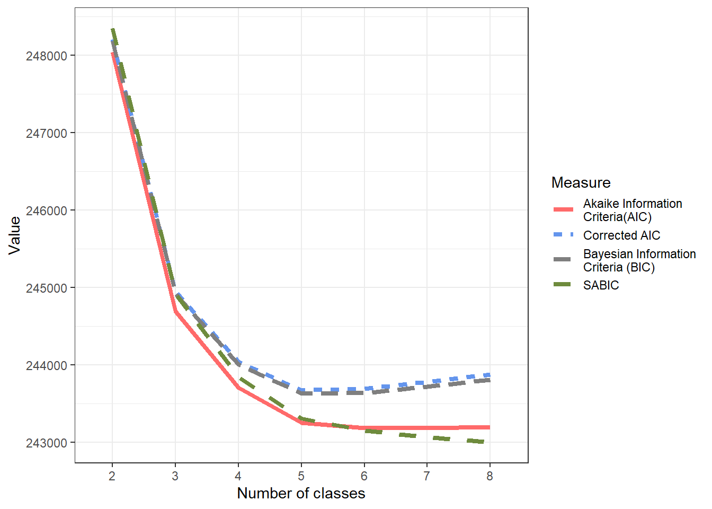
The best fit was obtained by the 5 class solution
Call:
glca(formula = f_preds4, data = mydata_preds23a, nclass = 5,
n.init = 50, decreasing = T, testiter = testiter, maxiter = 10000,
seed = seed, verbose = FALSE)
Manifest items : sus_principal_mod otras_sus1_mod dg_trs_cons_sus_or freq_cons_sus_prin
Categories for manifest items :
Y = 1 Y = 2 Y = 3 Y = 4
sus_principal_mod Alcohol Cocaine hydrochloride Cocaine paste Marijuana
otras_sus1_mod 2 3
dg_trs_cons_sus_or 2 3
freq_cons_sus_prin 1 2 3 4
Model : Latent class analysis
Number of latent classes : 5
Number of observations : 39680
Number of parameters : 44
log-likelihood : -121582.9
G-squared : 111.2323
AIC : 243253.9
BIC : 243631.8
Marginal prevalences for latent classes :
Class 1 Class 2 Class 3 Class 4 Class 5
0.12905 0.21937 0.42630 0.12189 0.10339
Class prevalences by group :
Class 1 Class 2 Class 3 Class 4 Class 5
ALL 0.12905 0.21937 0.4263 0.12189 0.10339
Item-response probabilities :
sus_principal_mod
Y = 1 Y = 2 Y = 3 Y = 4
Class 1 0.8639 0.0000 0.1361 0.0000
Class 2 0.5246 0.0026 0.4600 0.0129
Class 3 0.0000 0.3123 0.5928 0.0949
Class 4 0.0000 0.6988 0.3012 0.0000
Class 5 0.0000 0.3268 0.4375 0.2357
otras_sus1_mod
Y = 1 Y = 2
Class 1 0.0000 1.0000
Class 2 0.0000 1.0000
Class 3 0.6135 0.3865
Class 4 0.6875 0.3125
Class 5 0.6548 0.3452
dg_trs_cons_sus_or
Y = 1 Y = 2
Class 1 0.5460 0.4540
Class 2 0.1136 0.8864
Class 3 0.0000 1.0000
Class 4 0.3750 0.6250
Class 5 1.0000 0.0000
freq_cons_sus_prin
Y = 1 Y = 2 Y = 3 Y = 4
Class 1 0.0076 0.0657 0.6953 0.2314
Class 2 0.0019 0.0148 0.1582 0.8251
Class 3 0.0005 0.0214 0.1707 0.8075
Class 4 0.0092 0.1216 0.8692 0.0000
Class 5 0.0090 0.0842 0.3266 0.5802| rn | log_lik | aic | caic | bic | entropy | res_df | gsq | sabic | boot_p_value |
|---|---|---|---|---|---|---|---|---|---|
| 2 | -124004.5 | 248043.0 | 248206.0 | 248189.0 | 0.76 | 46 | 4954.33 | 248349.9 | 0.00 |
| 3 | -122321.9 | 244695.8 | 244945.1 | 244919.1 | 0.63 | 37 | 1589.16 | 244918.0 | 0.00 |
| 4 | -121819.6 | 243709.2 | 244044.8 | 244009.8 | 0.75 | 28 | 584.55 | 243846.7 | 0.00 |
| 5 | -121582.9 | 243253.9 | 243675.8 | 243631.8 | 0.72 | 19 | 111.23 | 243306.7 | 0.00 |
| 6 | -121539.8 | 243185.5 | 243693.7 | 243640.7 | 0.66 | 10 | 24.83 | 243153.6 | 0.12 |
| 7 | -121532.2 | 243188.4 | 243782.9 | 243720.9 | 0.60 | 1 | 9.74 | 243071.8 | 0.84 |
| 8 | -121529.1 | 243200.2 | 243881.0 | 243810.0 | 0.59 | -8 | 3.55 | 242998.9 | 0.93 |
Code
#https://rdrr.io/cran/glca/src/R/plot.glca.R
plot(eval(parse(text = paste0("lca40",best_model_lca4))), ask=F)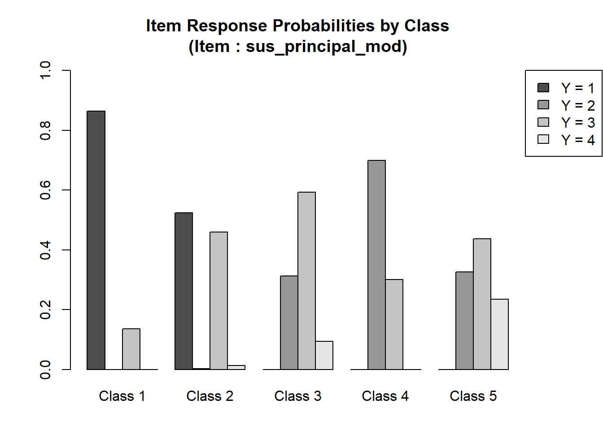
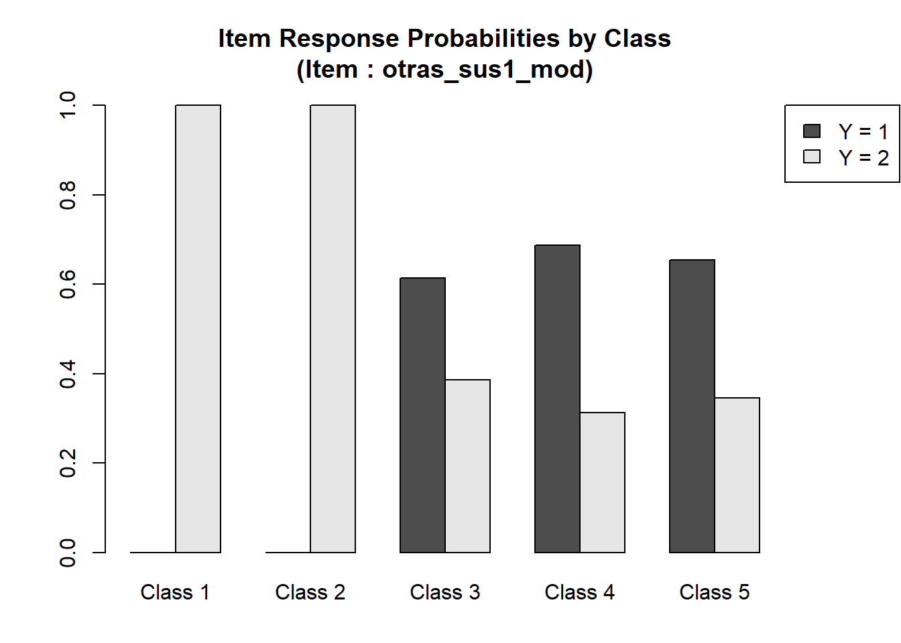
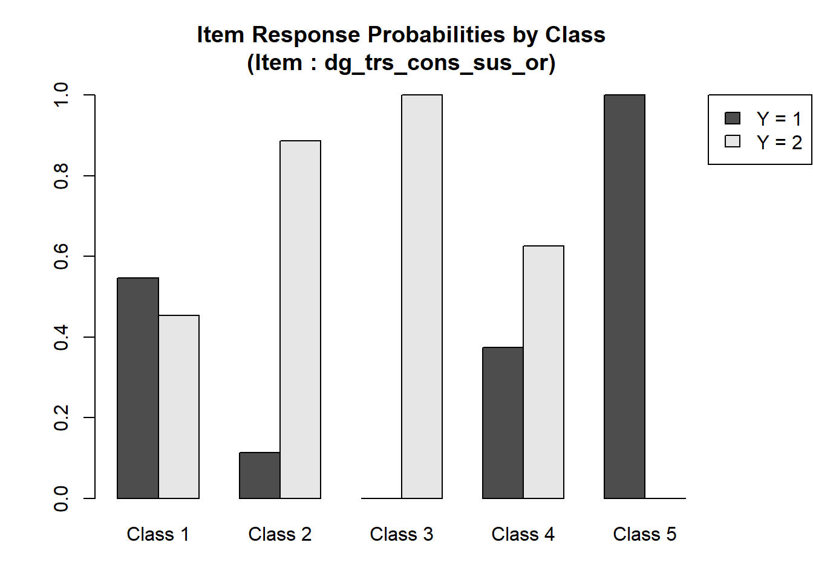
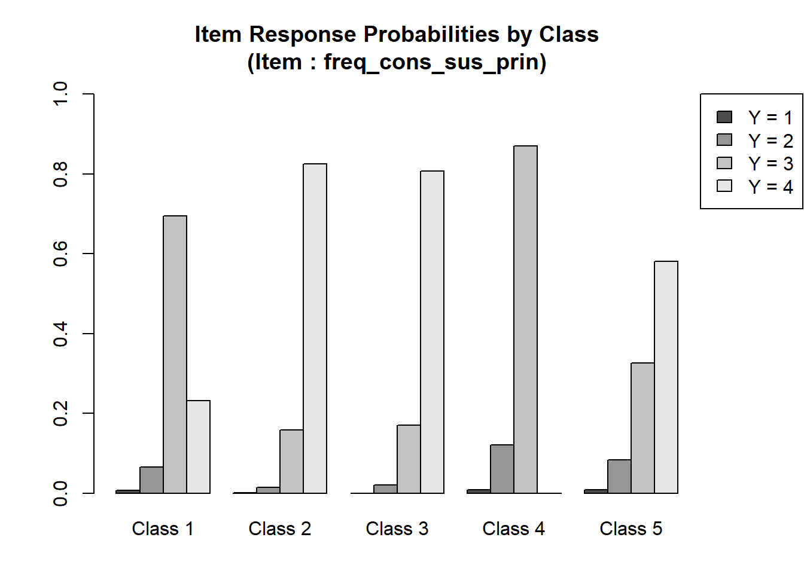
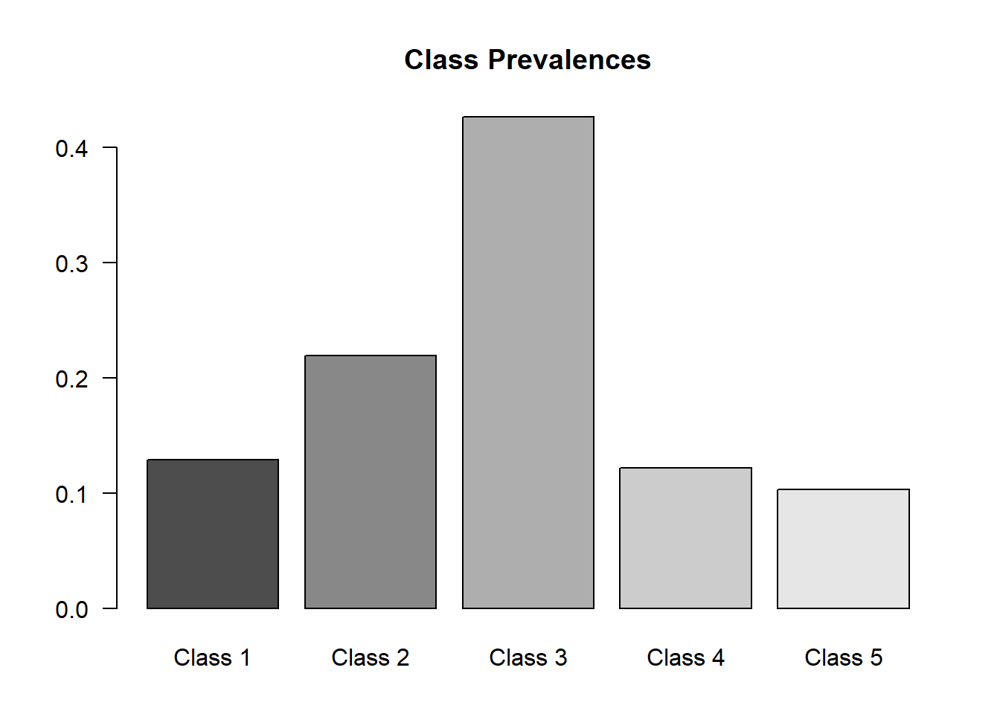
The following steps were involved in the following code:
- Analysis of the best LCA model’s parameter estimates.
- Visualization of the probabilities of different responses across categories.
- Extract the parameter ‘rho’ from the best model.
- Transform and format the extracted data for visualization.
- Read a correction table (
traductor_cats4) for categories. - Merge the model data with the correction table.
- The data is visualized using a ggplot2 stacked bar chart.
- Categories are represented with varying shades of grey.
- Each bar represents a variable from the model, and the sections of the bar represent the probability of each category for that variable.
- The bars are split by ‘class’ with the use of facets.
- The processed data (
lcmodel_glca4) containing variables and their probabilities across different categories is saved to an Excel file namedvariables_probabilities_in_category_glca_licit_ilicit_2.xlsx - The model’s parameters allow a deeper understanding of the probabilities across categories for different variables. The visualization provides a holistic view of the data for quick insights. The processed data is readily available for any further analysis or sharing.
Code
#table(mydata_preds3a$sus_principal_mod)
rho_glca4<-
do.call("bind_rows",best_model_glca4$param$rho$ALL) %>%
t() %>%
round(2) %>%
data.table::data.table(keep.rownames = T) %>%
magrittr::set_colnames(c("variables", paste0("Class",1:length(best_model_glca4$param$gamma)))) %>%
tidyr::separate(variables, into=c("var", "prob"), sep=".Y =")
lcmodel_glca4 <- reshape2::melt(rho_glca4, level=2) %>% dplyr::rename("class"="variable")
#test the number of categories
#table(mydata_preds23a$sus_principal_mod)
#table(mydata_preds23a$otras_sus1_mod)
traductor_cats4 <-
cbind.data.frame(
var= c(rep("sus_principal_mod",4), rep("otras_sus1_mod",3), rep("freq_cons_sus_prin",4), rep("dg_trs_cons_sus_or",3)),
lvl= c(rep(c(1, 2, 3, 4),1),1:3,1:4,1:3),
label= c(c("Alcohol", "Cocaine hydrochloride","Cocaine paste", "Marijuana"),rep(c("none","Licit", "Illicit"),1), c("none", "Less than one day a week", "1 to 3 days a week", "4+ days a week"), c("none", "Hazardous consumption", "Drug dependence"))
) %>%
dplyr::group_by(var) %>%
dplyr::mutate(n=n()) %>%
dplyr::ungroup() %>%
#restricted the levels of the manifest variables to those that were available
#dplyr::filter(dplyr::case_when(var=="sus_principal_mod" & !lvl %in% as.numeric(attr(table(mydata_preds23a$sus_principal_mod),"dimnames")[[1]])~ FALSE, TRUE~TRUE ))%>%
dplyr::filter(dplyr::case_when(var=="otras_sus1_mod" & !lvl %in% as.numeric(attr(table(mydata_preds23a$otras_sus1_mod),"dimnames")[[1]])~ FALSE, TRUE~TRUE ))%>%
dplyr::filter(dplyr::case_when(var=="otras_sus2_mod" & !lvl %in% as.numeric(attr(table(mydata_preds23a$otras_sus2_mod),"dimnames")[[1]])~ FALSE, TRUE~TRUE ))%>%
dplyr::filter(dplyr::case_when(var=="freq_cons_sus_prin" & !lvl %in% as.numeric(attr(table(mydata_preds23a$freq_cons_sus_prin),"dimnames")[[1]])~ FALSE, TRUE~TRUE))%>%
dplyr::filter(dplyr::case_when(var=="dg_trs_cons_sus_or" & !lvl %in% as.numeric(attr(table(mydata_preds23a$dg_trs_cons_sus_or),"dimnames")[[1]])~ FALSE, TRUE~TRUE))%>%
dplyr::group_by(var) %>%
dplyr::mutate(lvl2=row_number()) %>%
dplyr::ungroup()
lcmodel_glca4<- lcmodel_glca4 %>%
dplyr::mutate(pr=as.numeric(gsub("[^0-9.]+", "", prob))) %>%
dplyr::left_join(traductor_cats4[,c("var", "lvl2", "label")], by= c("var"="var", "pr"="lvl2"))
#dplyr::mutate(CATEGORIA= dplyr::case_when(var=="AÑO" & prob==" 1"~"Perdidos", T~CATEGORIA))
lcmodel_glca4$text_label<-paste0("",lcmodel_glca4$label,"<br>%: ",scales::percent(lcmodel_glca4$value))
lcmodel_glca4$text_label2<-paste0("",lcmodel_glca4$label,"\n ",scales::percent(lcmodel_glca4$value))
zp43 <- ggplot(lcmodel_glca4,aes(x = factor(var, levels=c("sus_principal_mod", "otras_sus1_mod", "otras_sus2_mod","freq_cons_sus_prin","dg_trs_cons_sus_or"), labels= c("Primary\nsubstance", "Other\nsubs(1)", "Other\nsubs(2)","Freq.Subs.Use","Dg.Subs.Dep")), y = value, fill = factor(pr), label=text_label))
zp43 <- zp43 + geom_bar(stat = "identity", position = "stack")
zp43 <- zp43 + facet_grid(class ~ .)
zp43 <- zp43 + scale_fill_brewer(type="seq", palette="Greys", na.value = "white") +theme_bw()
zp43 <- zp43 + labs(y = "Response probabilities",
x = "",
fill ="Respone/ncategories")
zp43 <- zp43 + theme( axis.text.y=element_blank(),
axis.ticks.y=element_blank(),
panel.grid.major.y=element_blank())
zp43 <- zp43 + guides(fill = guide_legend(reverse=TRUE))
zp43 <- zp43 + theme(axis.text.x = element_text(angle = 30, hjust = 1))+
theme(legend.position= "none")
ggplotly(zp43, tooltip = c("text_label"),height=600, width=800)%>% plotly::layout(xaxis= list(showticklabels = T))Selected Model
Code
ggsave("_fig3_LCA_distribuciones_glca_licit_ilicit_2.png",zp43, dpi= 600)
lcmodel_glca4 %>% rio::export("variables_probabilities_in_category_glca_licit_ilicit_2.xlsx")
zp43b <- ggplot(lcmodel_glca4,aes(x = factor(var, levels=c("sus_principal_mod", "otras_sus1_mod", "otras_sus2_mod","freq_cons_sus_prin","dg_trs_cons_sus_or"), labels= c("Primary\nsubstance", "Other\nsubs(1)", "Other\nsubs(2)","Freq.Subs.Use","Dg.Subs.Dep")), y = value, fill = factor(pr), label=text_label2))
zp43b <- zp43b + geom_bar(stat = "identity", position = "stack")
zp43b <- zp43b + facet_grid(class ~ .)
zp43b <- zp43b + scale_fill_brewer(type="seq", palette="Greys", na.value = "white") +theme_bw()
zp43b <- zp43b + labs(y = "Response probabilities",
x = "",
fill ="Respone/ncategories")
zp43b <- zp43b + scale_fill_manual(values=paste0("grey",seq(20,80, by=60/6))) +theme_bw()
zp43b <- zp43b + theme( axis.text.y=element_blank(),
axis.ticks.y=element_blank(),
panel.grid.major.y=element_blank())
zp43b <- zp43b + guides(fill = guide_legend(reverse=TRUE))
zp43b <- zp43b + theme(axis.text.x = element_text(angle = 30, hjust = 1))+
theme(legend.position= "none")
ggsave("zp43b.png",
zp43b+ ggrepel::geom_label_repel(#aes(#y=half, label=lab),
position = position_stack(vjust = 0.5),
size = 3,
max.iter = 1e6,
colour = "white", fontface = "bold")+ theme(legend.position= "none"),
height=13)#, fill = "white" --> dentro de label repel
lcmodel_glca4 %>% dplyr::select( class, var, label, value) %>% rio::export("tab_cond_pr_licit_illicit_2.xlsx")For ease of interpretation, we summarized the main characteristics of each class based on the probabilities provided:
1)“Hazardous Alcohol Users w/ Illicit Substances”: This class represents individuals who mainly consume alcohol (0.86) in moderate frequency (1-3 days a week; 0.70) and an illicit secondary substance (1.00). They mostly indulge in hazardous consumption (0.55).
2)“Intense Illicit Users”: This class embodies users who are heavily reliant on Alcohol (0.52) or Cocaine paste (0.46) as the primary substance, with a secondary illicit substance (1.00). They exhibit a strong drug dependence (0.89), consuming their preferred substance +4 days a week (0.83).
3)“Varied Cocaine Consumers”: Members of this class have a varied cocaine preference, ranging from cocaine paste (0.59) to cocaine hydrochloride (0.31). However, they probably will use licit substances as a secondary substance (0.61). They show consistent drug dependence (1.00) and frequent use of the primary substance (+4 days a week; 0.81).
4)“Cocaine Hydrochloride Regulars”: This group is characterized by a preference for cocaine hydrochloride (0.70) with licit secondary substance (0.69), with a balanced profile of hazardous consumption (0.37) and drug dependence (0.63). Their main substance use is regular (1-3 days a week, 0.87; Less than one day a week, 0.12) but not daily.
5)“Diverse Substance Users”: This class displays a broader substance usage palette, ranging from cocaine (0.33) and cocaine paste (0.44) to marijuana (0.24) as the primary substance, with a licit secondary substance (0.65). They lean heavily towards hazardous consumption (1.00) with varied frequency patterns, predominantly (+4 days a week; 0.58).
(For more info, see this link)
Code
#_#_#_#_#_#_#_#_#_#_#_
#Classifying by posterior probs.
posterior_glca4_05_final<-
best_model_glca4$posterior$ALL %>%
dplyr::mutate_all(~ifelse(.>.5,1,0)) %>%
dplyr::mutate(final_05=dplyr::case_when(`Class 1`==1~1,`Class 2`==1~2, `Class 3`==1~3,`Class 4`==1~4, `Class 5`==1~5))
posterior_glca4_07_final<-
best_model_glca4$posterior$ALL %>%
dplyr::mutate_all(~ifelse(.>.7,1,0)) %>%
dplyr::mutate(final_07=dplyr::case_when(`Class 1`==1~1,`Class 2`==1~2, `Class 3`==1~3,`Class 4`==1~4, `Class 5`==1~5))
#Unite the posterior probabilities with the original database
bd_mydata_preds4_posterior3<-
cbind.data.frame(mydata_preds23a,final_07=posterior_glca4_07_final$final_07,final_05=posterior_glca4_05_final$final_05)
sum_prob_post_2<-
table(bd_mydata_preds4_posterior3$final_05,
bd_mydata_preds4_posterior3$final_07,exclude=NULL) %>%
data.frame() %>%
dplyr::filter(Freq>0) %>%
dplyr::mutate(Perc= scales::percent(Freq/sum(Freq))) %>%
dplyr::arrange(desc(Var2), Var1,desc(Freq)) %>%
dplyr::filter(!is.na(Var2)) %>%
summarise(sum=sum(parse_number(Perc)))
#Determining misclassification
table(bd_mydata_preds4_posterior3$final_05,
bd_mydata_preds4_posterior3$final_07,exclude=NULL) %>%
data.frame() %>%
dplyr::filter(Freq>0) %>%
dplyr::mutate(Perc= scales::percent(Freq/sum(Freq))) %>%
dplyr::arrange(desc(Var2), Var1,desc(Freq)) %>%
knitr::kable("markdown", caption="Posterior probabilities of Classification",
col.names= c("Classifying w/ .5", "Classifying w/ .7", "Frequency", "%"))| Classifying w/ .5 | Classifying w/ .7 | Frequency | % |
|---|---|---|---|
| 5 | 5 | 2446 | 6.16% |
| 4 | 4 | 1241 | 3.13% |
| 3 | 3 | 10947 | 27.59% |
| 2 | 2 | 3805 | 9.59% |
| 1 | 1 | 1949 | 4.91% |
| 1 | NA | 3236 | 8.16% |
| 2 | NA | 14 | 0.04% |
| 3 | NA | 7924 | 19.97% |
| 4 | NA | 3738 | 9.42% |
| 5 | NA | 858 | 2.16% |
| NA | NA | 3522 | 8.88% |
When using classification criteria based on the model output, if at least 50% of an observation’s posterior probability is accounted for by a particular class, only 1.52% of the patients remain unclassified. However, if we raise this threshold to 70%, then 48.62% of the patients would not be assigned to any latent class. This observation aligns with relative entropy principles.
Code
require(easyalluvial)
require(parcats)
p_alluvial4<-
cbind.data.frame(subset(Base_fiscalia_v16_grant_23_24, !is.na(otras_sus1_mod)) %>% dplyr::mutate(across(c("sus_principal_mod", "otras_sus1_mod", "otras_sus2_mod","dg_trs_cons_sus_or","freq_cons_sus_prin"), ~ dplyr::case_when(is.na(.)~ "none", TRUE~ .))) %>% dplyr::filter(!sus_principal_mod=="Other", !otras_sus1_mod=="Other", !otras_sus2_mod=="Other"),
final_07=posterior_glca4_07_final$final_07, final_05=posterior_glca4_05_final$final_05) %>%
dplyr::mutate(event_comp= factor(event_comp, levels=c(1,0), labels=c("Completion", "Non-completion"))) %>%
dplyr::mutate(final_05=factor(final_05, labels=c("C1: Hazardous Alcohol\n+ Illicit User", "C2: Alcohol/Cocaine paste\n Frequent Dependence+ Heavy Illicit 2nd use", "C3: Frequent Dependence of Snort Cocaine \n& Cocaine paste +Illicit Secondary Subtance", "C4: Regular cocaine hydrochloride\n+ Licit 2nd Substance Use", "C5: Frequent Hazardous Cocaine paste, Snort\nCocaine & Marijuana Use + Licit 2nd substance"))) %>%
dplyr::select(
#sus_principal_mod,
# otras_sus1_mod,
# otras_sus2_mod,
final_05,
event_comp) %>%
easyalluvial::alluvial_wide(
bin=2,
bin_labels = c("ambulatory", "residential"),
order_levels= c("ambulatory", "residential","censored"),
fill_by = 'first_variable',
NA_label = "non-classified",
auto_rotate_xlabs = T,
stratum_label_size = 3,
colorful_fill_variable_stratum = FALSE)+
theme_void()
p_alluvial4
Code
ggsave("glca_res_comp_off_licit_illicit_2.png",
p_alluvial4,
height=13)#, fill = "white" --> dentro de label repelCovariate: Tr. completion
- Adjusting by treatment completion status
Code
#2023-10-25, falta completar
mydata_preds323<-
cbind.data.frame(subset(Base_fiscalia_v16_grant_23_24, !is.na(otras_sus1_mod)) %>% dplyr::mutate(across(c("sus_principal_mod", "otras_sus1_mod", "otras_sus2_mod","dg_trs_cons_sus_or","freq_cons_sus_prin"), ~ dplyr::case_when(is.na(.)~ "none", TRUE~ .))) %>% dplyr::filter(!sus_principal_mod=="Other", !otras_sus1_mod=="Other", !otras_sus2_mod=="Other"),
final_07=posterior_glca4_07_final$final_07, final_05=posterior_glca4_05_final$final_05,
mydata_preds3a) %>%
janitor::clean_names() %>%
dplyr::mutate(event_comp= factor(event_comp, levels=c(1,0), labels=c("Completion", "Non-completion"))) %>%
dplyr::mutate(final_05=factor(final_05, labels=c("C1: Hazardous Alcohol\n+ Illicit User", "C2: Alcohol/Cocaine paste\n Frequent Dependence+ Heavy Illicit 2nd use", "C3: Frequent Dependence of Snort Cocaine \n& Cocaine paste +Illicit Secondary Subtance", "C4: Regular cocaine hydrochloride\n+ Licit 2nd Substance Use", "C5: Frequent Hazardous Cocaine paste, Snort\nCocaine & Marijuana Use + Licit 2nd substance")))
f_preds23_adj<- item(sus_principal_mod_2, otras_sus1_mod_2, dg_trs_cons_sus_or_2, freq_cons_sus_prin_2) ~ event_comp
lca4052 <- glca(f_preds23_adj, data = mydata_preds323, nclass = 5, seed = seed, verbose = FALSE, n.init = 5e1, decreasing=TRUE, maxiter = 1e4, testiter = testiter)
gof_lca4_adj<- gofglca(lca4052, test="boot", nboot=n_bootstrap, seed=2125)
df_lca4052<-
data.frame(coef(lca4052)) %>% rownames_to_column("term") %>% janitor::clean_names() %>%
rownames_to_column("rowname") %>%
gather(key = "key", value = "value", -rowname) %>%
spread(key = "rowname", value = "value") %>%
set_names(as.character(unlist(tail(., 1)))) %>%
slice(-n()) %>%
dplyr::mutate(term=strsplit(sub('^(.*?_.*?_.*?)_(.*)$', '\\1,\\2', term), ',')) %>%
separate(col=term,into = c("prefix", "suffix"), sep = ", ", extra = "merge") %>%
dplyr::mutate(across(c("prefix", "suffix"), ~gsub('\\(|"|\\)', "", .))) Class 1 / 5 :
Odds Ratio Coefficient Std. Error t value Pr(>|t|)
(Intercept) 0.30244 -1.19588 0.76505 -1.563 0.13059
event_compNon-completion 1.23057 0.20748 0.07406 2.802 0.00967
(Intercept)
event_compNon-completion **
---
Signif. codes: 0 '***' 0.001 '**' 0.01 '*' 0.05 '.' 0.1 ' ' 1
Class 2 / 5 :
Odds Ratio Coefficient Std. Error t value Pr(>|t|)
(Intercept) 1.97877 0.68248 0.22764 2.998 0.00607
event_compNon-completion 1.53709 0.42989 0.04731 9.088 2.13e-09
(Intercept) **
event_compNon-completion ***
---
Signif. codes: 0 '***' 0.001 '**' 0.01 '*' 0.05 '.' 0.1 ' ' 1
Class 3 / 5 :
Odds Ratio Coefficient Std. Error t value Pr(>|t|)
(Intercept) 0.22600 -1.48723 0.74268 -2.003 0.05619
event_compNon-completion 0.76570 -0.26696 0.08253 -3.235 0.00341
(Intercept) .
event_compNon-completion **
---
Signif. codes: 0 '***' 0.001 '**' 0.01 '*' 0.05 '.' 0.1 ' ' 1
Class 4 / 5 :
Odds Ratio Coefficient Std. Error t value Pr(>|t|)
(Intercept) 0.82793 -0.18883 0.40857 -0.462 0.648
event_compNon-completion 1.09499 0.09075 0.16068 0.565 0.577Code
df_lca40522<-
df_lca4052%>%
dplyr::filter(suffix == "coefficient" | suffix == "std_error") %>%
pivot_wider(names_from=suffix, values_from = c("(Intercept)", "event_compNon-completion")) %>%
dplyr::mutate_at(2:5, ~as.numeric(.)) %>%
dplyr::mutate(
lower_log_or_int = `(Intercept)_coefficient` - 1.96 * `(Intercept)_std_error`,
upper_log_or_int = `(Intercept)_coefficient` + 1.96 * `event_compNon-completion_std_error`,
lower_log_or_comp = `event_compNon-completion_coefficient` - 1.96 * `event_compNon-completion_std_error`,
upper_log_or_comp = `event_compNon-completion_coefficient` + 1.96 * `event_compNon-completion_std_error`) %>%
dplyr::rename("int_coef"="(Intercept)_coefficient", "int_std_error"="(Intercept)_std_error", "comp_coef"="event_compNon-completion_coefficient","comp_std_error"="event_compNon-completion_std_error") %>%
dplyr::select(prefix,#t_coef int_std_error comp_coef comp_std_error
int_coef, int_std_error, comp_coef, comp_std_error,
lower_log_or_int, upper_log_or_int, lower_log_or_comp, upper_log_or_comp)Code
# List of call classes
call_classes <- unique(df_lca4052$prefix)
result2 <- map_df(call_classes, ~ {
df_lca40522 %>%
dplyr::mutate(int_comp_coef=int_coef+comp_coef) %>%
dplyr::summarise(call_class = .x,
nom = sum(ifelse(prefix == .x, exp(int_comp_coef), 0)),
den = sum(exp(int_comp_coef)),
prob = nom/(1+den))
})
result2_lo <- map_df(call_classes, ~ {
df_lca40522 %>%
dplyr::mutate(int_comp_coef=lower_log_or_int+lower_log_or_comp) %>%
dplyr::summarise(call_class = .x,
nom = sum(ifelse(prefix == .x, exp(int_comp_coef), 0)),
den = sum(exp(int_comp_coef)),
prob = nom/(1+den))
})
result2_hi <- map_df(call_classes, ~ {
df_lca40522 %>%
dplyr::mutate(int_comp_coef=upper_log_or_int+upper_log_or_comp) %>%
dplyr::summarise(call_class = .x,
nom = sum(ifelse(prefix == .x, exp(int_comp_coef), 0)),
den = sum(exp(int_comp_coef)),
prob = nom/(1+den))
})
df_lca40522_probs<-
cbind.data.frame(
est=c(result2$prob, 1/(1+unique(result2$den))),
lo=c(result2_lo$prob, 1/(1+unique(result2_lo$den))),
hi=c(result2_hi$prob, 1/(1+unique(result2_hi$den))))
f22 <-cbind(sus_principal_mod_2, otras_sus1_mod_2,dg_trs_cons_sus_or_2, freq_cons_sus_prin_2) ~ event_comp
gss.lc22 <-poLCA(f22, mydata_preds323, nclass=5,nrep=testiter, maxiter=1e5, verbose=F, calc.se=T) Warning in sqrt(diag(VCE.beta)): Se han producido NaNs
Warning in sqrt(diag(VCE.mix)): Se han producido NaNs
Warning in sqrt(diag(VCE.beta)): Se han producido NaNs
Warning in sqrt(diag(VCE.mix)): Se han producido NaNs
Warning in sqrt(diag(VCE.beta)): Se han producido NaNs
Warning in sqrt(diag(VCE.mix)): Se han producido NaNs
Code
gss.lc22$eflag[1] TRUECode
invisible("no llegan a lo mismo")Given that
Code
rho_glca4_adj<-
do.call("bind_rows",lca4052$param$rho$ALL) %>%
t() %>%
round(2) %>%
data.table::data.table(keep.rownames = T) %>%
magrittr::set_colnames(c("variables", paste0("Class",1:dim(lca4052$param$gamma[[1]])[[2]]))) %>%
tidyr::separate(variables, into=c("var", "prob"), sep=".Y =")
lcmodel_glca4_adj <- reshape2::melt(rho_glca4_adj, level=2) %>% dplyr::rename("class"="variable")
lcmodel_glca4_adj<- lcmodel_glca4_adj %>%
dplyr::mutate(pr=as.numeric(gsub("[^0-9.]+", "", prob))) %>%
dplyr::left_join(traductor_cats4[,c("var", "lvl2", "label")] %>% dplyr::mutate(var= paste0(var, "_2")), by= c("var"="var", "pr"="lvl2"))
#dplyr::mutate(CATEGORIA= dplyr::case_when(var=="AÑO" & prob==" 1"~"Perdidos", T~CATEGORIA))
lcmodel_glca4_adj$text_label<-paste0("",lcmodel_glca4_adj$label,"<br>%: ",scales::percent(lcmodel_glca4_adj$value))
lcmodel_glca4_adj$text_label2<-paste0("",lcmodel_glca4_adj$label,"\n ",scales::percent(lcmodel_glca4_adj$value))
zp332 <- ggplot(lcmodel_glca4_adj,aes(x = factor(var, levels=c("sus_principal_mod_2", "otras_sus1_mod_2", "otras_sus2_mod_2","freq_cons_sus_prin_2","dg_trs_cons_sus_or_2"), labels= c("Primary\nsubstance", "Other\nsubs(1)", "Other\nsubs(2)","Freq.Subs.Use","Dg.Subs.Dep")), y = value, fill = factor(pr), label=text_label))
zp332 <- zp332 + geom_bar(stat = "identity", position = "stack")
zp332 <- zp332 + facet_grid(class ~ .)
zp332 <- zp332 + scale_fill_brewer(type="seq", palette="Greys", na.value = "white") +theme_bw()
zp332 <- zp332 + labs(y = "Response probabilities",
x = "",
fill ="Respone/ncategories")
zp332 <- zp332 + theme( axis.text.y=element_blank(),
axis.ticks.y=element_blank(),
panel.grid.major.y=element_blank())
zp332 <- zp332 + guides(fill = guide_legend(reverse=TRUE))
zp332 <- zp332 + theme(axis.text.x = element_text(angle = 30, hjust = 1))+
theme(legend.position= "none")
ggplotly(zp332, tooltip = c("text_label"),height=600, width=800)%>% plotly::layout(xaxis= list(showticklabels = T))Selected Model (adjusted)
Code
ggsave("_fig3_adj_LCA_distribuciones_glca_licit_illicit_adj_2.png",zp332, dpi= 600)
lcmodel_glca4_adj %>% rio::export("variables_probabilities_in_category_glca_licit_illicit_adj_2.xlsx")
zp332b <- ggplot(lcmodel_glca4_adj,aes(x = factor(var, levels=c("sus_principal_mod_2", "otras_sus1_mod_2", "otras_sus2_mod_2","freq_cons_sus_prin_2","dg_trs_cons_sus_or_2"), labels= c("Primary\nsubstance", "Other\nsubs(1)", "Other\nsubs(2)","Freq.Subs.Use","Dg.Subs.Dep")), y = value, fill = factor(pr), label=text_label2))
zp332b <- zp332b + geom_bar(stat = "identity", position = "stack")
zp332b <- zp332b + facet_grid(class ~ .)
zp332b <- zp332b + scale_fill_brewer(type="seq", palette="Greys", na.value = "white") +theme_bw()
zp332b <- zp332b + labs(y = "Response probabilities",
x = "",
fill ="Respone/ncategories")
zp332b <- zp332b + scale_fill_manual(values=paste0("grey",seq(20,80, by=60/6))) +theme_bw()
zp332b <- zp332b + theme( axis.text.y=element_blank(),
axis.ticks.y=element_blank(),
panel.grid.major.y=element_blank())
zp332b <- zp332b + guides(fill = guide_legend(reverse=TRUE))
zp332b <- zp332b + theme(axis.text.x = element_text(angle = 30, hjust = 1))+
theme(legend.position= "none")
ggsave("zp323.png",
zp332b+ ggrepel::geom_label_repel(#aes(#y=half, label=lab),
position = position_stack(vjust = 0.5),
size = 3,
max.iter = 1e6,
colour = "white", fontface = "bold")+ theme(legend.position= "none"),
height=13)#, fill = "white" --> dentro de label repel
lcmodel_glca4_adj %>% dplyr::select( class, var, label, value) %>% rio::export("tab_cond_pr_licit_illicit_adj_2.xlsx")Bivariate
Code
variables_comp3 <- c("porc_pobr",
"clas_r",
"fis_comorbidity_icd_10",
"edad_b_ap_top_num",
"comorbidity_icd_10",
"con_quien_vive_joel",
"sus_ini_mod",
"estado_conyugal_2",
"compromiso_biopsicosocial",
"macrozona",
"escolaridad_rec",
"event_comp"
)
tbone_desc_merge_grant_23_24_licit_illicit_2<-
CreateTableOne(vars= variables_comp3,
data= cbind.data.frame(subset(Base_fiscalia_v16_grant_23_24, !is.na(otras_sus1_mod)) %>% dplyr::mutate(across(c("sus_principal_mod", "otras_sus1_mod", "otras_sus2_mod","dg_trs_cons_sus_or","freq_cons_sus_prin"), ~ dplyr::case_when(is.na(.)~ "none", TRUE~ .))) %>% dplyr::filter(!sus_principal_mod=="Other", !otras_sus1_mod=="Other", !otras_sus2_mod=="Other"),
final_07=posterior_glca4_07_final$final_07, final_05=posterior_glca4_05_final$final_05) %>%
dplyr::mutate(event_comp= factor(event_comp, levels=c(1,0), labels=c("Completion", "Non-completion"))) %>%
dplyr::mutate(final_05=factor(final_05, labels=c("C1: Hazardous Alcohol\n+ Illicit User", "C2: Alcohol/Cocaine paste\n Frequent Dependence+ Heavy Illicit 2nd use", "C3: Frequent Dependence of Snort Cocaine \n& Cocaine paste +Illicit Secondary Subtance", "C4: Regular cocaine hydrochloride\n+ Licit 2nd Substance Use", "C5: Frequent Hazardous Cocaine paste, Snort\nCocaine & Marijuana Use + Licit 2nd substance"))),
factorVars = setdiff(variables_comp3, c("edad_b_ap_top_num", "porc_pobr")),
smd=T,
strata="final_05",
addOverall = T,
includeNA=T,
test=T)#Code
#define a table
as.data.frame.TableOne(tbone_desc_merge_grant_23_24_licit_illicit_2, smd=TRUE, nonnormal= TRUE)%>%
dplyr::mutate(char2=characteristic) %>%
tidyr::fill(char2) %>%
dplyr::select(char2,everything()) %>%
dplyr::mutate(level=ifelse(is.na(level),"[Missing]",level)) %>%
dplyr::mutate(char2=dplyr::case_when(characteristic=="NA"~NA_character_,TRUE~as.character(characteristic))) %>%
format_cells(1, 1:length(names(.)), "bold") %>%
dplyr::select(-1) %>%
knitr::kable(size=10, format="html",caption= "Summary descriptives, Latent classes", escape=T) %>%
kableExtra::kable_classic() %>%
kableExtra::scroll_box(width = "500px", height = "400px")| characteristic | level | Overall | C1: Hazardous Alcohol + Illicit User | C2: Alcohol/Cocaine paste Frequent Dependence+ Heavy Illicit 2nd use | C3: Frequent Dependence of Snort Cocaine & Cocaine paste +Illicit Secondary Subtance | C4: Regular cocaine hydrochloride + Licit 2nd Substance Use | C5: Frequent Hazardous Cocaine paste, Snort Cocaine & Marijuana Use + Licit 2nd substance | p | test | SMD |
|---|---|---|---|---|---|---|---|---|---|---|
| **n** | **39680** | **5185** | **3819** | **18871** | **4979** | **3304** | ||||
| porc_pobr (median [IQR]) | 0.09 [0.06, 0.14] | 0.09 [0.06, 0.14] | 0.09 [0.06, 0.13] | 0.09 [0.07, 0.14] | 0.09 [0.06, 0.12] | 0.09 [0.06, 0.13] | <0.001 | nonnorm | 0.082 | |
| clas_r (%) | Mixta | 3862 ( 9.7) | 669 (12.9) | 355 ( 9.3) | 1626 ( 8.6) | 449 ( 9.0) | 420 (12.7) | <0.001 | 0.160 | |
| clas_r (%) | Rural | 2778 ( 7.0) | 560 (10.8) | 328 ( 8.6) | 1125 ( 6.0) | 227 ( 4.6) | 318 ( 9.6) | |||
| clas_r (%) | Urbana | 33040 (83.3) | 3956 (76.3) | 3136 (82.1) | 16120 (85.4) | 4303 (86.4) | 2566 (77.7) | |||
| fis_comorbidity_icd_10 (%) | Without physical comorbidity | 14982 (37.8) | 1952 (37.6) | 1251 (32.8) | 7143 (37.9) | 2102 (42.2) | 1232 (37.3) | <0.001 | 0.151 | |
| fis_comorbidity_icd_10 (%) | Diagnosis unknown (under study) | 22550 (56.8) | 2956 (57.0) | 2187 (57.3) | 10669 (56.5) | 2654 (53.3) | 1972 (59.7) | |||
| fis_comorbidity_icd_10 (%) | One or more | 2148 ( 5.4) | 277 ( 5.3) | 381 (10.0) | 1059 ( 5.6) | 223 ( 4.5) | 100 ( 3.0) | |||
| edad_b_ap_top_num (median [IQR]) | 32.64 [26.75, 39.25] | 35.47 [29.07, 43.04] | 39.84 [31.39, 48.60] | 32.34 [26.59, 38.09] | 32.55 [27.03, 37.48] | 30.77 [25.48, 37.96] | <0.001 | nonnorm | 0.368 | |
| comorbidity_icd_10 (%) | Diagnosis unknown (under study) | 8465 (21.3) | 895 (17.3) | 690 (18.1) | 4496 (23.8) | 958 (19.2) | 609 (18.4) | <0.001 | 0.145 | |
| comorbidity_icd_10 (%) | One | 16332 (41.2) | 2116 (40.8) | 1735 (45.4) | 7913 (41.9) | 1904 (38.2) | 1388 (42.0) | |||
| comorbidity_icd_10 (%) | Two or more | 808 ( 2.0) | 93 ( 1.8) | 109 ( 2.9) | 449 ( 2.4) | 79 ( 1.6) | 36 ( 1.1) | |||
| comorbidity_icd_10 (%) | Without psychiatric comorbidity | 14075 (35.5) | 2081 (40.1) | 1285 (33.6) | 6013 (31.9) | 2038 (40.9) | 1271 (38.5) | |||
| con_quien_vive_joel (%) | Alone | 3337 ( 8.4) | 526 (10.1) | 527 (13.8) | 1588 ( 8.4) | 269 ( 5.4) | 230 ( 7.0) | <0.001 | 0.236 | |
| con_quien_vive_joel (%) | Family of origin | 18217 (45.9) | 2019 (38.9) | 1534 (40.2) | 9318 (49.4) | 2102 (42.2) | 1521 (46.0) | |||
| con_quien_vive_joel (%) | Others | 3520 ( 8.9) | 400 ( 7.7) | 472 (12.4) | 1794 ( 9.5) | 303 ( 6.1) | 271 ( 8.2) | |||
| con_quien_vive_joel (%) | With couple/children | 14606 (36.8) | 2240 (43.2) | 1286 (33.7) | 6171 (32.7) | 2305 (46.3) | 1282 (38.8) | |||
| sus_ini_mod (%) | Alcohol | 21988 (55.4) | 4302 (83.0) | 3088 (80.9) | 8768 (46.5) | 2860 (57.4) | 1809 (54.8) | <0.001 | 0.497 | |
| sus_ini_mod (%) | Cocaína | 1512 ( 3.8) | 71 ( 1.4) | 57 ( 1.5) | 766 ( 4.1) | 383 ( 7.7) | 104 ( 3.1) | |||
| sus_ini_mod (%) | Marihuana | 13855 (34.9) | 693 (13.4) | 558 (14.6) | 7892 (41.8) | 1604 (32.2) | 1170 (35.4) | |||
| sus_ini_mod (%) | Otros | 647 ( 1.6) | 44 ( 0.8) | 53 ( 1.4) | 388 ( 2.1) | 57 ( 1.1) | 53 ( 1.6) | |||
| sus_ini_mod (%) | Pasta Base | 1549 ( 3.9) | 50 ( 1.0) | 45 ( 1.2) | 1017 ( 5.4) | 55 ( 1.1) | 160 ( 4.8) | |||
| sus_ini_mod (%) | [Missing] | 129 ( 0.3) | 25 ( 0.5) | 18 ( 0.5) | 40 ( 0.2) | 20 ( 0.4) | 8 ( 0.2) | |||
| estado_conyugal_2 (%) | Married/Shared living arrangements | 12022 (30.3) | 1876 (36.2) | 1149 (30.1) | 5102 (27.0) | 1846 (37.1) | 1019 (30.8) | <0.001 | 0.196 | |
| estado_conyugal_2 (%) | Separated/Divorced | 3401 ( 8.6) | 543 (10.5) | 571 (15.0) | 1434 ( 7.6) | 398 ( 8.0) | 241 ( 7.3) | |||
| estado_conyugal_2 (%) | Single | 23960 (60.4) | 2717 (52.4) | 2052 (53.7) | 12199 (64.6) | 2712 (54.5) | 2019 (61.1) | |||
| estado_conyugal_2 (%) | Widower | 249 ( 0.6) | 38 ( 0.7) | 41 ( 1.1) | 118 ( 0.6) | 18 ( 0.4) | 20 ( 0.6) | |||
| estado_conyugal_2 (%) | [Missing] | 48 ( 0.1) | 11 ( 0.2) | 6 ( 0.2) | 18 ( 0.1) | 5 ( 0.1) | 5 ( 0.2) | |||
| compromiso_biopsicosocial (%) | 1-Mild | 2784 ( 7.0) | 703 (13.6) | 143 ( 3.7) | 555 ( 2.9) | 645 (13.0) | 457 (13.8) | <0.001 | 0.469 | |
| compromiso_biopsicosocial (%) | 2-Moderate | 22773 (57.4) | 3612 (69.7) | 1984 (52.0) | 9230 (48.9) | 3325 (66.8) | 2274 (68.8) | |||
| compromiso_biopsicosocial (%) | 3-Severe | 13382 (33.7) | 756 (14.6) | 1641 (43.0) | 8801 (46.6) | 876 (17.6) | 475 (14.4) | |||
| compromiso_biopsicosocial (%) | [Missing] | 741 ( 1.9) | 114 ( 2.2) | 51 ( 1.3) | 285 ( 1.5) | 133 ( 2.7) | 98 ( 3.0) | |||
| macrozona (%) | Center | 30550 (77.0) | 3768 (72.7) | 2788 (73.0) | 14518 (76.9) | 4504 (90.5) | 2363 (71.5) | <0.001 | 0.340 | |
| macrozona (%) | North | 6295 (15.9) | 687 (13.2) | 522 (13.7) | 3384 (17.9) | 200 ( 4.0) | 742 (22.5) | |||
| macrozona (%) | South | 2825 ( 7.1) | 728 (14.0) | 508 (13.3) | 967 ( 5.1) | 275 ( 5.5) | 196 ( 5.9) | |||
| macrozona (%) | [Missing] | 10 ( 0.0) | 2 ( 0.0) | 1 ( 0.0) | 2 ( 0.0) | 0 ( 0.0) | 3 ( 0.1) | |||
| escolaridad_rec (%) | 1-More than high school | 7101 (17.9) | 1090 (21.0) | 828 (21.7) | 2942 (15.6) | 1169 (23.5) | 583 (17.6) | <0.001 | 0.166 | |
| escolaridad_rec (%) | 2-Completed high school or less | 22804 (57.5) | 2866 (55.3) | 1994 (52.2) | 10864 (57.6) | 2997 (60.2) | 1963 (59.4) | |||
| escolaridad_rec (%) | 3-Completed primary school or less | 9656 (24.3) | 1202 (23.2) | 982 (25.7) | 5021 (26.6) | 799 (16.0) | 743 (22.5) | |||
| escolaridad_rec (%) | [Missing] | 119 ( 0.3) | 27 ( 0.5) | 15 ( 0.4) | 44 ( 0.2) | 14 ( 0.3) | 15 ( 0.5) | |||
| event_comp (%) | Completion | 7461 (18.8) | 1241 (23.9) | 871 (22.8) | 3244 (17.2) | 952 (19.1) | 641 (19.4) | <0.001 | 0.085 | |
| event_comp (%) | Non-completion | 32219 (81.2) | 3944 (76.1) | 2948 (77.2) | 15627 (82.8) | 4027 (80.9) | 2663 (80.6) |
Code
as.data.frame.TableOne(tbone_desc_merge_grant_23_24_licit_illicit_2, smd=TRUE, nonnormal= TRUE)%>%
dplyr::mutate(char2=characteristic) %>%
tidyr::fill(char2) %>%
dplyr::select(char2,everything()) %>%
dplyr::mutate(level=ifelse(is.na(level),"[Missing]",level)) %>%
dplyr::mutate(char2=dplyr::case_when(characteristic=="NA"~NA_character_,TRUE~ as.character(characteristic))) %>%
format_cells(1, 1:length(names(.)), "bold") %>%
dplyr::select(-1) %>% rio::export("tab_car_licit_illicit_2.xlsx")C1: Hazardous Alcohol + Illicit User= Represents a higher proportion of urban dwellers (76.3%). 83% started with alcohol. Majority (69.7%) has moderate biopsychosocial compromise. Over half (55.3%) have completed high school or less. 76.1% non-completion rate for “event_comp”.
C2: Alcohol/Cocaine paste Frequent Dependence+ Heavy Illicit 2nd use= High illicit secondary substance use, alongside alcohol and cocaine paste. Majority (82.1%) are urban dwellers. Majority (57.3%) under “fis_comorbidity_icd_10” are under study. Age tends to be higher with a median of 39.84. 43% have severe biopsychosocial compromise. Majority (52.2%) have completed high school or less.
C3: Frequent Dependence of Snort Cocaine & Cocaine paste + Illicit Secondary Substance= High proportion (85.4%) of urban dwellers. Significant use of snorted cocaine, cocaine paste, and other illicit substances. 46.5% started with alcohol, while 41.8% started with marijuana. Majority (48.9%) has moderate biopsychosocial compromise. High percentage (64.6%) are single. Majority (57.6%) have completed high school or less.
Class C4: Regular cocaine hydrochloride + Licit 2nd Substance Use = Primarily use cocaine hydrochloride and have a licit second substance of choice. Highest urban dwelling proportion (86.4%). 57.4% started with alcohol. Majority (66.8%) has moderate biopsychosocial compromise. Majority (60.2%) have completed high school or less. 80.9% non-completion rate for “event_comp”.
Class C5: Frequent Hazardous Cocaine paste, Snort Cocaine & Marijuana Use + Licit 2nd substance= Varied substance use, with frequent hazardous consumption patterns for cocaine paste, snorted cocaine, and marijuana. 77.7% urban dwellers. Majority (59.7%) under “fis_comorbidity_icd_10” are under study. 54.8% started with alcohol. Majority (68.8%) has moderate biopsychosocial compromise. Majority (59.4%) have completed high school or less. 80.6% non-completion rate for “event_comp”.
Imputation and export
Code
require(missRanger)
#dplyr::filter(dplyr::case_when(!motivodeegreso_mod_imp_1 %in% c("Derivación","En curso") & !is.na(tot_off_top)~T,T~F))
#if(exists("no_mostrar")){
set.seed(2125)
Base_fiscalia_v16_grant_23_24_miss <-
Base_fiscalia_v16_grant_23_24 %>%
#dplyr::filter(dplyr::case_when(!motivodeegreso_mod_imp_1 %in% c("Derivación","En curso") & !is.na(tot_off_top)~T,T~F)) %>%
dplyr::arrange(hash_key, edad_al_ing_1) %>%
dplyr::select() %>%
missRanger::missRanger(
formula = porc_pobr+ clas_r + fis_comorbidity_icd_10 + edad_b_ap_top_num + comorbidity_icd_10 + con_quien_vive_joel + sus_ini_mod + estado_conyugal_2 + compromiso_biopsicosocial + macrozona + escolaridad_rec + ~ . - hash_key -offender_d - age_tr_comp_imp,
num.trees = 200,
pmm.k = 3,
returnOOB=T,
maxiter= 50,
verbose = 2,
seed = 2125)
Missing value imputation by random forestsError in missRanger::missRanger(., formula = porc_pobr + clas_r + fis_comorbidity_icd_10 + : dim(data) >= 1L are not all TRUE
Code
#should drop:
# event_offense age_dropout_imp event_comp age_at_censor_date time_to_off_from_adm time_to_drop_from_adm edad_comision_imp fec_comision_simple_2 relacion_vifsaf_2
values_pris<- c(0.0013, 0.0053, 0.0000, 0.0000, 0.0000, 0.0158, 0.0000, 0.0000, 0.0000, 0.0000, 6e-04, 0.0024, 0.0024, 5e-04, 0.0285)
paste0("Mdn= ",median(values_pris)," Q1= ",quantile(values_pris,.25),", Q3= ", quantile(values_pris, .75))[1] "Mdn= 5e-04 Q1= 0, Q3= 0.0024"Export
Code
#2023-01-01 we had a problem with edad_al_ing_fmt. This variable predict better (it had lower amount of missing data and was in wide format)
#cont_vars_desc[1]<-ifelse(cont_vars_desc[1]=="edad_al_ing_fmt","edad_al_ing_1",cont_vars_desc[1])
Base_fiscalia_v16_grant_23_24 %>%
# dplyr::filter(dplyr::case_when(!motivodeegreso_mod_imp_1 %in% c("Derivación","En curso") & !is.na(tot_off_top)~T,T~F)) %>%
dplyr::arrange(hash_key, fech_ing_num_1) %>%
data.table::data.table() %>%
rio::export(file = paste0("an_grant_23_24.dta"))
#_#_#_#_#_#_#_#_#_#_#_#_#_#_#_#_#_#_#_#_#_
#_#_#_#_#_#_#_#_#_#_#_#_#_#_#_#_#_#_#_#_#_#_#_#_#_#_#_#_#_#_#_#_#_#_#_#_#_#_#_#_#_#_
# IMPUTATION
#:#:#:#:#:#:#:#:#:#:#:#:#:#:#:#:#:#:#:#:#:#:#:#:#:#:#:#:#:#:#:#:#:#:#:#:#:#:#:#:
#:#:#:#:#:#:#:#:#:#:#:#:#:#:#:#:
Base_fiscalia_v16_grant_23_24_miss %>%
dplyr::arrange(hash_key, fech_ing_num_1) %>%
data.table::data.table() %>%
rio::export(file = paste0("an_grant_23_24_miss.dta"))Error in dplyr::arrange(., hash_key, fech_ing_num_1): objeto ‘Base_fiscalia_v16_grant_23_24_miss’ no encontrado
Adjusted Logistic regression
Code
#_#_#_#_#_#_#_#_#_#_#_#_#_#_#_#_#_#_#_#_#_#_#_#_#_#_#_#_#_#_
#_#_#_#_#_#_#_#_#_#_#_#_#_#_#_#_#_#_#_#_#_#_#_#_#_#_#_#_#_#_
#Our simulation-based approach to the estimation of mediation effects enables users to deal with missing data via standard multiple imputation procedures in a straightforward fashion. The mediation package includes a pair of utility functions – mediations and amelidiate– to facilitate such analysis. First, users simulate multiple data sets using their preferredimputation software. Next, run mediate on each data set by simply passing the data setsthrough mediations. Next, pass the output of mediations to the amelidiate function, which combines the components of the output from mediations into a format that can be analyzed with the standard summary and plot commands.5 Alternatively, users can manually run mediate on their imputed data sets and simply stack the vectors of quantities they are interested in, and use basic functions like quantile to calculate confidence intervals.
#, sims = 100 Simulations: 100
require("MatchIt")
#Base_fiscalia_v16_grant_23_24 %>%
# dplyr::filter(dplyr::case_when(!motivodeegreso_mod_imp_1 %in% c("Derivación","En curso") & !is.na(tot_off_top)~T,T~F))
variables_vector <- c("sex", "edad_ini_cons", "escolaridad_rec", "condicion_ocupacional_corr", "num_hijos_mod_joel_bin", "tenencia_de_la_vivienda_mod", "macrozona", "n_off_vio", "n_off_acq", "n_off_sud", "n_off_oth", "dg_cie_10_rec", "dg_trs_cons_sus_or", "clas_r", "porc_pobr", "sus_ini_mod_mvv", "ano_nac_corr", "con_quien_vive_joel", "fis_comorbidity_icd_10", "n_off_vict")
#edad_ini_cons macrozona estado_conyugal_2 con_quien_vive numero_de_hijos_mod origen_ingreso_mod tenencia_de_la_vivienda_mod rubro_trabaja_mod condicion_ocupacional_corr
#mot_egres_mod_imp_rec_num
#clasificacion
#porc_pobr
#numero_de_hijos_mod_joel
#ano_nac_corr
#num_hijos_mod_joel_bin
#fis_comorbidity_icd_10
#clas_r
#tot_off_top
#get a matched cohort of people by polysubstance use
m.out3 <- matchit(policonsumo ~ rcs(edad_al_ing_1, 4) + sex + edad_ini_cons + escolaridad_rec + condicion_ocupacional_corr + num_hijos_mod_joel_bin + tenencia_de_la_vivienda_mod + macrozona + n_off_vio + n_off_acq + n_off_sud + n_off_oth + dg_cie_10_rec + dg_trs_cons_sus_or + clas_r + porc_pobr + sus_ini_mod_mvv + ano_nac_corr + con_quien_vive_joel + fis_comorbidity_icd_10+ n_off_vict,
data = Base_fiscalia_v16_grant_23_24 %>% dplyr::filter(dplyr::case_when(!motivodeegreso_mod_imp_1 %in% c("Derivación","En curso") & !is.na(tot_off_top)~T,T~F)) %>% dplyr::select(variables_vector),
#Base_fiscalia_v16_grant_23_24[complete.cases(Base_fiscalia_v16_grant_23_24[,..variables_vector]),],
method = "nearest",
discard = "both",
caliper = .05,
standardize = T)
plot(
cobalt::bal.tab(m.out3, un = TRUE, m.threshold = .1,
v.threshold = 2))
#_#_#_#_#_#_#_#_#_#_#_#_#_#_#_#_#_#_#_#_#_#_#_#_#_#_#_#_
#_#_#_#_#_#_#_#_#_#_#_#_#_#_#_#_#_#_#_#_#_#_#_#_#_#_#_#_
#install.packages("MatchThem")
# require(MatchThem)
#https://cran.r-project.org/web/packages/MatchThem/MatchThem.pdf
imputed.datasets <- mice::mice(dplyr::select(Base_fiscalia_v15f_grant_23_24,c(variables_vector,"edad_al_ing_1","policonsumo","time_to_off_from_adm","time_to_drop_from_adm","event_death","event_comp","event_offense")), m = 5)
#Currently, "within" (performing matching within each dataset) and "across" (estimating propensity scores within each dataset, averaging them across datasets, and performing matching using the averaged propensity scores in each dataset) approaches are available. The default is "within", which has been shown to have superior performance in most cases
#Matching the multiply imputed datasets
matched.datasets <- matchthem(policonsumo ~ sex + edad_ini_cons + escolaridad_rec + condicion_ocupacional_corr + num_hijos_mod_joel_bin + tenencia_de_la_vivienda_mod + macrozona + n_off_vio + n_off_acq + n_off_sud + n_off_oth + dg_cie_10_rec + dg_trs_cons_sus_or + clas_r + porc_pobr + sus_ini_mod_mvv + ano_nac_corr + con_quien_vive_joel + fis_comorbidity_icd_10+ n_off_vict,
imputed.datasets, approach = 'within', method = 'nearest')
#Matching Observations | dataset: #1Error: Missing values are not allowed in the covariates.
#Multiply imputing the missing values
imputed.datasets <- mice::mice(osteoarthritis, m = 5)
#Matching the multiply imputed datasets
matched.datasets <- matchthem(OSP ~ AGE + SEX + BMI + RAC + SMK,
imputed.datasets,
approach = 'within',
method = 'nearest')
#Multiply imputing the missing values
imputed.datasets <- mice::mice(osteoarthritis, m = 5)
#Estimating weights of observations in the multiply imputed datasets
weighted.datasets <- weightthem(OSP ~ AGE + SEX + BMI + RAC + SMK,
imputed.datasets,
approach = 'within',
method = 'ps',
estimand = "ATT")
#Analyzing the weighted datasets
models <- with(data = weighted.datasets,
exp = svyglm(KOA ~ OSP, family = binomial))
#Pooling results obtained from analysing the datasets
results <- pool(models)Session info
Code
message(paste0("R library: ", Sys.getenv("R_LIBS_USER")))Code
message(paste0("Date: ",withr::with_locale(new = c('LC_TIME' = 'C'), code =Sys.time())))Code
message(paste0("Editor context: ", path))Code
sesion_info <- devtools::session_info()
dplyr::select(
tibble::as_tibble(sesion_info$packages),
c(package, loadedversion, source)
) %>%
kable(caption = "R packages", format = "markdown",
col.names = c("Row number", "Package", "Version"),
row.names = FALSE,
align = c("c", "l", "r"))| Row number | Package | Version |
|---|---|---|
| assertthat | 0.2.1 | CRAN (R 4.1.2) |
| backports | 1.4.1 | CRAN (R 4.1.2) |
| base64enc | 0.1-3 | CRAN (R 4.1.1) |
| BiocManager | 1.30.18 | CRAN (R 4.1.3) |
| bit | 4.0.4 | CRAN (R 4.1.2) |
| bit64 | 4.0.5 | CRAN (R 4.1.2) |
| blob | 1.2.3 | CRAN (R 4.1.3) |
| broom | 1.0.1 | CRAN (R 4.1.3) |
| cachem | 1.0.6 | CRAN (R 4.1.2) |
| callr | 3.7.2 | CRAN (R 4.1.3) |
| cellranger | 1.1.0 | CRAN (R 4.1.2) |
| checkmate | 2.1.0 | CRAN (R 4.1.3) |
| chron | 2.3-58 | CRAN (R 4.1.3) |
| class | 7.3-20 | CRAN (R 4.1.3) |
| cli | 3.4.1 | CRAN (R 4.1.3) |
| clisymbols | 1.2.0 | CRAN (R 4.1.3) |
| cluster | 2.1.4 | CRAN (R 4.1.3) |
| codetools | 0.2-19 | CRAN (R 4.1.3) |
| colorspace | 2.0-3 | CRAN (R 4.1.2) |
| compareGroups | 4.5.1 | CRAN (R 4.1.2) |
| crayon | 1.5.2 | CRAN (R 4.1.3) |
| crosstalk | 1.2.0 | CRAN (R 4.1.2) |
| curl | 4.3.3 | CRAN (R 4.1.3) |
| data.table | 1.14.2 | CRAN (R 4.1.2) |
| DBI | 1.1.3 | CRAN (R 4.1.3) |
| dbplyr | 2.2.1 | CRAN (R 4.1.3) |
| deldir | 1.0-6 | CRAN (R 4.1.1) |
| devtools | 2.4.5 | CRAN (R 4.1.2) |
| digest | 0.6.29 | CRAN (R 4.1.2) |
| doRNG | 1.8.2 | CRAN (R 4.1.3) |
| dplyr | 1.0.10 | CRAN (R 4.1.3) |
| DT | 0.26 | CRAN (R 4.1.2) |
| e1071 | 1.7-11 | CRAN (R 4.1.3) |
| easyalluvial | 0.3.1 | CRAN (R 4.1.3) |
| ellipsis | 0.3.2 | CRAN (R 4.1.2) |
| evaluate | 0.17 | CRAN (R 4.1.3) |
| fansi | 1.0.3 | CRAN (R 4.1.3) |
| farver | 2.1.1 | CRAN (R 4.1.3) |
| fastmap | 1.1.0 | CRAN (R 4.1.2) |
| flextable | 0.8.2 | CRAN (R 4.1.3) |
| FNN | 1.1.3.1 | CRAN (R 4.1.3) |
| forcats | 0.5.2 | CRAN (R 4.1.3) |
| foreach | 1.5.2 | CRAN (R 4.1.2) |
| foreign | 0.8-83 | CRAN (R 4.1.3) |
| Formula | 1.2-4 | CRAN (R 4.1.1) |
| fs | 1.5.2 | CRAN (R 4.1.2) |
| future | 1.28.0 | CRAN (R 4.1.3) |
| future.apply | 1.10.0 | CRAN (R 4.1.3) |
| gargle | 1.2.1 | CRAN (R 4.1.3) |
| gdtools | 0.2.4 | CRAN (R 4.1.2) |
| generics | 0.1.3 | CRAN (R 4.1.3) |
| ggalluvial | 0.12.3 | CRAN (R 4.1.3) |
| ggplot2 | 3.4.1 | CRAN (R 4.1.3) |
| ggrepel | 0.9.1 | CRAN (R 4.1.3) |
| ggridges | 0.5.4 | CRAN (R 4.1.3) |
| glca | 1.3.3 | CRAN (R 4.1.3) |
| globals | 0.16.1 | CRAN (R 4.1.3) |
| glue | 1.6.2 | CRAN (R 4.1.2) |
| googledrive | 2.0.0 | CRAN (R 4.1.2) |
| googlesheets4 | 1.0.1 | CRAN (R 4.1.3) |
| gower | 1.0.0 | CRAN (R 4.1.2) |
| gridExtra | 2.3 | CRAN (R 4.1.2) |
| gsubfn | 0.7 | CRAN (R 4.1.2) |
| gtable | 0.3.1 | CRAN (R 4.1.3) |
| hardhat | 1.2.0 | CRAN (R 4.1.3) |
| HardyWeinberg | 1.7.5 | CRAN (R 4.1.3) |
| haven | 2.5.1 | CRAN (R 4.1.3) |
| highr | 0.9 | CRAN (R 4.1.2) |
| Hmisc | 4.7-1 | CRAN (R 4.1.3) |
| hms | 1.1.2 | CRAN (R 4.1.3) |
| htmlTable | 2.4.1 | CRAN (R 4.1.3) |
| htmltools | 0.5.3 | CRAN (R 4.1.3) |
| htmlwidgets | 1.5.4 | CRAN (R 4.1.2) |
| httpuv | 1.6.6 | CRAN (R 4.1.3) |
| httr | 1.4.4 | CRAN (R 4.1.3) |
| interp | 1.1-3 | CRAN (R 4.1.3) |
| ipred | 0.9-13 | CRAN (R 4.1.3) |
| iterators | 1.0.14 | CRAN (R 4.1.2) |
| itertools | 0.1-3 | CRAN (R 4.1.3) |
| janitor | 2.1.0 | CRAN (R 4.1.2) |
| jpeg | 0.1-9 | CRAN (R 4.1.1) |
| jsonlite | 1.8.2 | CRAN (R 4.1.3) |
| jtools | 2.2.0 | CRAN (R 4.1.3) |
| kableExtra | 1.3.4 | CRAN (R 4.1.3) |
| knitr | 1.40 | CRAN (R 4.1.3) |
| labeling | 0.4.2 | CRAN (R 4.1.1) |
| labelled | 2.10.0 | CRAN (R 4.1.3) |
| later | 1.3.0 | CRAN (R 4.1.2) |
| lattice | 0.20-45 | CRAN (R 4.1.1) |
| latticeExtra | 0.6-30 | CRAN (R 4.1.3) |
| lava | 1.6.10 | CRAN (R 4.1.2) |
| lazyeval | 0.2.2 | CRAN (R 4.1.2) |
| lifecycle | 1.0.3 | CRAN (R 4.1.3) |
| listenv | 0.8.0 | CRAN (R 4.1.2) |
| lubridate | 1.8.0 | CRAN (R 4.1.2) |
| magrittr | 2.0.3 | CRAN (R 4.1.3) |
| MASS | 7.3-58.1 | CRAN (R 4.1.3) |
| Matrix | 1.5-1 | CRAN (R 4.1.3) |
| memoise | 2.0.1 | CRAN (R 4.1.2) |
| mice | 3.14.0 | CRAN (R 4.1.2) |
| mime | 0.12 | CRAN (R 4.1.1) |
| miniUI | 0.1.1.1 | CRAN (R 4.1.2) |
| missForest | 1.5 | CRAN (R 4.1.3) |
| missRanger | 2.1.3 | CRAN (R 4.1.3) |
| mitools | 2.4 | CRAN (R 4.1.2) |
| modelr | 0.1.9 | CRAN (R 4.1.3) |
| munsell | 0.5.0 | CRAN (R 4.1.2) |
| nnet | 7.3-18 | CRAN (R 4.1.3) |
| officer | 0.4.4 | CRAN (R 4.1.3) |
| openxlsx | 4.2.5 | CRAN (R 4.1.2) |
| pacman | 0.5.1 | CRAN (R 4.1.2) |
| pander | 0.6.5 | CRAN (R 4.1.3) |
| parallelly | 1.32.1 | CRAN (R 4.1.3) |
| parcats | 0.0.4 | CRAN (R 4.1.3) |
| pillar | 1.8.1 | CRAN (R 4.1.3) |
| pkgbuild | 1.3.1 | CRAN (R 4.1.2) |
| pkgconfig | 2.0.3 | CRAN (R 4.1.2) |
| pkgload | 1.3.0 | CRAN (R 4.1.3) |
| plotly | 4.10.0 | CRAN (R 4.1.2) |
| plyr | 1.8.7 | CRAN (R 4.1.3) |
| png | 0.1-7 | CRAN (R 4.1.1) |
| poLCA | 1.6.0.1 | CRAN (R 4.1.3) |
| prettyunits | 1.1.1 | CRAN (R 4.1.2) |
| processx | 3.7.0 | CRAN (R 4.1.3) |
| prodlim | 2019.11.13 | CRAN (R 4.1.2) |
| profvis | 0.3.7 | CRAN (R 4.1.3) |
| progressr | 0.11.0 | CRAN (R 4.1.3) |
| promises | 1.2.0.1 | CRAN (R 4.1.2) |
| proto | 1.0.0 | CRAN (R 4.1.2) |
| proxy | 0.4-27 | CRAN (R 4.1.3) |
| ps | 1.7.1 | CRAN (R 4.1.3) |
| purrr | 0.3.5 | CRAN (R 4.1.3) |
| R6 | 2.5.1 | CRAN (R 4.1.2) |
| ragg | 1.2.3 | CRAN (R 4.1.3) |
| randomForest | 4.7-1.1 | CRAN (R 4.1.3) |
| ranger | 0.14.1 | CRAN (R 4.1.3) |
| RColorBrewer | 1.1-3 | CRAN (R 4.1.3) |
| Rcpp | 1.0.9 | CRAN (R 4.1.3) |
| readr | 2.1.3 | CRAN (R 4.1.3) |
| readxl | 1.4.1 | CRAN (R 4.1.3) |
| recipes | 1.0.2 | CRAN (R 4.1.2) |
| remotes | 2.4.2 | CRAN (R 4.1.2) |
| renv | 1.0.1 | CRAN (R 4.1.2) |
| reprex | 2.0.2 | CRAN (R 4.1.3) |
| reshape2 | 1.4.4 | CRAN (R 4.1.2) |
| reticulate | 1.26 | CRAN (R 4.1.3) |
| rio | 0.5.29 | CRAN (R 4.1.2) |
| rlang | 1.0.6 | CRAN (R 4.1.3) |
| rmarkdown | 2.17 | CRAN (R 4.1.3) |
| rngtools | 1.5.2 | CRAN (R 4.1.3) |
| rpart | 4.1.16 | CRAN (R 4.1.3) |
| Rsolnp | 1.16 | CRAN (R 4.1.2) |
| RSQLite | 2.2.18 | CRAN (R 4.1.3) |
| rstudioapi | 0.15.0 | CRAN (R 4.1.2) |
| rvest | 1.0.3 | CRAN (R 4.1.3) |
| scales | 1.2.1 | CRAN (R 4.1.3) |
| scatterplot3d | 0.3-42 | CRAN (R 4.1.3) |
| sessioninfo | 1.2.2 | CRAN (R 4.1.2) |
| shiny | 1.7.2 | CRAN (R 4.1.3) |
| snakecase | 0.11.0 | CRAN (R 4.1.2) |
| sqldf | 0.4-11 | CRAN (R 4.1.3) |
| stringi | 1.7.6 | CRAN (R 4.1.2) |
| stringr | 1.4.1 | CRAN (R 4.1.3) |
| survey | 4.1-1 | CRAN (R 4.1.2) |
| survival | 3.4-0 | CRAN (R 4.1.3) |
| svglite | 2.1.0 | CRAN (R 4.1.2) |
| systemfonts | 1.0.4 | CRAN (R 4.1.2) |
| tableone | 0.13.2 | CRAN (R 4.1.3) |
| textshaping | 0.3.6 | CRAN (R 4.1.3) |
| tibble | 3.1.8 | CRAN (R 4.1.3) |
| tidylog | 1.0.2 | CRAN (R 4.1.3) |
| tidyr | 1.2.1 | CRAN (R 4.1.3) |
| tidyselect | 1.2.0 | CRAN (R 4.1.2) |
| tidyverse | 1.3.2 | CRAN (R 4.1.3) |
| timeDate | 4021.106 | CRAN (R 4.1.3) |
| truncnorm | 1.0-8 | CRAN (R 4.1.2) |
| tzdb | 0.3.0 | CRAN (R 4.1.3) |
| urlchecker | 1.0.1 | CRAN (R 4.1.3) |
| usethis | 2.1.6 | CRAN (R 4.1.3) |
| utf8 | 1.2.2 | CRAN (R 4.1.2) |
| uuid | 1.1-0 | CRAN (R 4.1.3) |
| vctrs | 0.5.2 | CRAN (R 4.1.3) |
| viridisLite | 0.4.1 | CRAN (R 4.1.3) |
| webshot | 0.5.4 | CRAN (R 4.1.3) |
| withr | 2.5.0 | CRAN (R 4.1.2) |
| writexl | 1.4.0 | CRAN (R 4.1.2) |
| xfun | 0.33 | CRAN (R 4.1.3) |
| xml2 | 1.3.3 | CRAN (R 4.1.2) |
| xtable | 1.8-4 | CRAN (R 4.1.2) |
| yaml | 2.3.6 | CRAN (R 4.1.3) |
| zip | 2.2.1 | CRAN (R 4.1.3) |
| zoo | 1.8-11 | CRAN (R 4.1.3) |
Code
reticulate::py_list_packages()%>%
kable(caption = "Python packages", format = "markdown",
col.names = c("Package", "Version", "Requirement", "Channel"),
row.names = FALSE,
align = c("c", "l", "r", "r"))| Package | Version | Requirement | Channel |
|---|---|---|---|
| alabaster | 0.7.12 | alabaster=0.7.12 | pkgs/main |
| anaconda-client | 1.11.2 | anaconda-client=1.11.2 | pkgs/main |
| anaconda-navigator | 2.4.0 | anaconda-navigator=2.4.0 | pkgs/main |
| anaconda-project | 0.11.1 | anaconda-project=0.11.1 | pkgs/main |
| anyio | 3.5.0 | anyio=3.5.0 | pkgs/main |
| appdirs | 1.4.4 | appdirs=1.4.4 | pkgs/main |
| argon2-cffi | 21.3.0 | argon2-cffi=21.3.0 | pkgs/main |
| argon2-cffi-bindings | 21.2.0 | argon2-cffi-bindings=21.2.0 | pkgs/main |
| arrow | 1.2.3 | arrow=1.2.3 | pkgs/main |
| astor | 0.8.1 | astor=0.8.1 | pypi |
| astroid | 2.14.2 | astroid=2.14.2 | pkgs/main |
| astropy | 5.1 | astropy=5.1 | pkgs/main |
| asttokens | 2.0.5 | asttokens=2.0.5 | pkgs/main |
| atomicwrites | 1.4.0 | atomicwrites=1.4.0 | pkgs/main |
| attrs | 22.1.0 | attrs=22.1.0 | pkgs/main |
| autograd | 1.5 | autograd=1.5 | pypi |
| autograd-gamma | 0.5.0 | autograd-gamma=0.5.0 | pypi |
| automat | 20.2.0 | automat=20.2.0 | pkgs/main |
| autopep8 | 1.6.0 | autopep8=1.6.0 | pkgs/main |
| babel | 2.11.0 | babel=2.11.0 | pkgs/main |
| backcall | 0.2.0 | backcall=0.2.0 | pkgs/main |
| backports | 1.1 | backports=1.1 | pkgs/main |
| backports.functools_lru_cache | 1.6.4 | backports.functools_lru_cache=1.6.4 | pkgs/main |
| backports.tempfile | 1.0 | backports.tempfile=1.0 | pkgs/main |
| backports.weakref | 1.0.post1 | backports.weakref=1.0.post1 | pkgs/main |
| bcrypt | 3.2.0 | bcrypt=3.2.0 | pkgs/main |
| beautifulsoup4 | 4.11.1 | beautifulsoup4=4.11.1 | pkgs/main |
| binaryornot | 0.4.4 | binaryornot=0.4.4 | pkgs/main |
| black | 22.6.0 | black=22.6.0 | pkgs/main |
| blas | 1.0 | blas=1.0 | pkgs/main |
| bleach | 4.1.0 | bleach=4.1.0 | pkgs/main |
| blosc | 1.21.3 | blosc=1.21.3 | pkgs/main |
| bokeh | 2.4.3 | bokeh=2.4.3 | pkgs/main |
| boltons | 23.0.0 | boltons=23.0.0 | pkgs/main |
| bottleneck | 1.3.5 | bottleneck=1.3.5 | pkgs/main |
| brotli | 1.0.9 | brotli=1.0.9 | pkgs/main |
| brotli-bin | 1.0.9 | brotli-bin=1.0.9 | pkgs/main |
| brotlipy | 0.7.0 | brotlipy=0.7.0 | pkgs/main |
| bzip2 | 1.0.8 | bzip2=1.0.8 | pkgs/main |
| ca-certificates | 2023.01.10 | ca-certificates=2023.01.10 | pkgs/main |
| certifi | 2022.12.7 | certifi=2022.12.7 | pkgs/main |
| cffi | 1.15.1 | cffi=1.15.1 | pkgs/main |
| cfitsio | 3.470 | cfitsio=3.470 | pkgs/main |
| chardet | 4.0.0 | chardet=4.0.0 | pkgs/main |
| charls | 2.2.0 | charls=2.2.0 | pkgs/main |
| charset-normalizer | 2.0.4 | charset-normalizer=2.0.4 | pkgs/main |
| click | 8.0.4 | click=8.0.4 | pkgs/main |
| cloudpickle | 2.0.0 | cloudpickle=2.0.0 | pkgs/main |
| clyent | 1.2.2 | clyent=1.2.2 | pkgs/main |
| colorama | 0.4.6 | colorama=0.4.6 | pkgs/main |
| colorcet | 3.0.1 | colorcet=3.0.1 | pkgs/main |
| comm | 0.1.2 | comm=0.1.2 | pkgs/main |
| conda | 23.3.1 | conda=23.3.1 | pkgs/main |
| conda-build | 3.24.0 | conda-build=3.24.0 | pkgs/main |
| conda-content-trust | 0.1.3 | conda-content-trust=0.1.3 | pkgs/main |
| conda-pack | 0.6.0 | conda-pack=0.6.0 | pkgs/main |
| conda-package-handling | 2.0.2 | conda-package-handling=2.0.2 | pkgs/main |
| conda-package-streaming | 0.7.0 | conda-package-streaming=0.7.0 | pkgs/main |
| conda-repo-cli | 1.0.41 | conda-repo-cli=1.0.41 | pkgs/main |
| conda-token | 0.4.0 | conda-token=0.4.0 | pkgs/main |
| conda-verify | 3.4.2 | conda-verify=3.4.2 | pkgs/main |
| console_shortcut | 0.1.1 | console_shortcut=0.1.1 | pkgs/main |
| constantly | 15.1.0 | constantly=15.1.0 | pkgs/main |
| contourpy | 1.0.5 | contourpy=1.0.5 | pkgs/main |
| cookiecutter | 1.7.3 | cookiecutter=1.7.3 | pkgs/main |
| cryptography | 39.0.1 | cryptography=39.0.1 | pkgs/main |
| cssselect | 1.1.0 | cssselect=1.1.0 | pkgs/main |
| curl | 7.87.0 | curl=7.87.0 | pkgs/main |
| cycler | 0.11.0 | cycler=0.11.0 | pkgs/main |
| cytoolz | 0.12.0 | cytoolz=0.12.0 | pkgs/main |
| daal4py | 2023.0.2 | daal4py=2023.0.2 | pkgs/main |
| dal | 2023.0.1 | dal=2023.0.1 | pkgs/main |
| dask | 2022.7.0 | dask=2022.7.0 | pkgs/main |
| dask-core | 2022.7.0 | dask-core=2022.7.0 | pkgs/main |
| datashader | 0.14.4 | datashader=0.14.4 | pkgs/main |
| datashape | 0.5.4 | datashape=0.5.4 | pkgs/main |
| debugpy | 1.5.1 | debugpy=1.5.1 | pkgs/main |
| decorator | 5.1.1 | decorator=5.1.1 | pkgs/main |
| defusedxml | 0.7.1 | defusedxml=0.7.1 | pkgs/main |
| diff-match-patch | 20200713 | diff-match-patch=20200713 | pkgs/main |
| dill | 0.3.6 | dill=0.3.6 | pkgs/main |
| distributed | 2022.7.0 | distributed=2022.7.0 | pkgs/main |
| docstring-to-markdown | 0.11 | docstring-to-markdown=0.11 | pkgs/main |
| docutils | 0.18.1 | docutils=0.18.1 | pkgs/main |
| entrypoints | 0.4 | entrypoints=0.4 | pkgs/main |
| et_xmlfile | 1.1.0 | et_xmlfile=1.1.0 | pkgs/main |
| executing | 0.8.3 | executing=0.8.3 | pkgs/main |
| filelock | 3.9.0 | filelock=3.9.0 | pkgs/main |
| flake8 | 6.0.0 | flake8=6.0.0 | pkgs/main |
| flask | 2.2.2 | flask=2.2.2 | pkgs/main |
| flit-core | 3.6.0 | flit-core=3.6.0 | pkgs/main |
| fonttools | 4.25.0 | fonttools=4.25.0 | pkgs/main |
| formulaic | 0.6.1 | formulaic=0.6.1 | pypi |
| freetype | 2.12.1 | freetype=2.12.1 | pkgs/main |
| fsspec | 2022.11.0 | fsspec=2022.11.0 | pkgs/main |
| future | 0.18.3 | future=0.18.3 | pkgs/main |
| gensim | 4.3.0 | gensim=4.3.0 | pkgs/main |
| giflib | 5.2.1 | giflib=5.2.1 | pkgs/main |
| glib | 2.69.1 | glib=2.69.1 | pkgs/main |
| glob2 | 0.7 | glob2=0.7 | pkgs/main |
| greenlet | 2.0.1 | greenlet=2.0.1 | pkgs/main |
| gst-plugins-base | 1.18.5 | gst-plugins-base=1.18.5 | pkgs/main |
| gstreamer | 1.18.5 | gstreamer=1.18.5 | pkgs/main |
| h5py | 3.7.0 | h5py=3.7.0 | pkgs/main |
| hdf5 | 1.10.6 | hdf5=1.10.6 | pkgs/main |
| heapdict | 1.0.1 | heapdict=1.0.1 | pkgs/main |
| holoviews | 1.15.4 | holoviews=1.15.4 | pkgs/main |
| huggingface_hub | 0.10.1 | huggingface_hub=0.10.1 | pkgs/main |
| hvplot | 0.8.2 | hvplot=0.8.2 | pkgs/main |
| hyperlink | 21.0.0 | hyperlink=21.0.0 | pkgs/main |
| icc_rt | 2022.1.0 | icc_rt=2022.1.0 | pkgs/main |
| icu | 58.2 | icu=58.2 | pkgs/main |
| idna | 3.4 | idna=3.4 | pkgs/main |
| imagecodecs | 2021.8.26 | imagecodecs=2021.8.26 | pkgs/main |
| imageio | 2.26.0 | imageio=2.26.0 | pkgs/main |
| imagesize | 1.4.1 | imagesize=1.4.1 | pkgs/main |
| imbalanced-learn | 0.10.1 | imbalanced-learn=0.10.1 | pkgs/main |
| importlib-metadata | 4.11.3 | importlib-metadata=4.11.3 | pkgs/main |
| importlib_metadata | 4.11.3 | importlib_metadata=4.11.3 | pkgs/main |
| incremental | 21.3.0 | incremental=21.3.0 | pkgs/main |
| inflection | 0.5.1 | inflection=0.5.1 | pkgs/main |
| iniconfig | 1.1.1 | iniconfig=1.1.1 | pkgs/main |
| intake | 0.6.7 | intake=0.6.7 | pkgs/main |
| intel-openmp | 2021.4.0 | intel-openmp=2021.4.0 | pkgs/main |
| interface-meta | 1.3.0 | interface-meta=1.3.0 | pypi |
| intervaltree | 3.1.0 | intervaltree=3.1.0 | pkgs/main |
| ipykernel | 6.19.2 | ipykernel=6.19.2 | pkgs/main |
| ipython | 8.10.0 | ipython=8.10.0 | pkgs/main |
| ipython_genutils | 0.2.0 | ipython_genutils=0.2.0 | pkgs/main |
| ipywidgets | 7.6.5 | ipywidgets=7.6.5 | pkgs/main |
| isort | 5.9.3 | isort=5.9.3 | pkgs/main |
| itemadapter | 0.3.0 | itemadapter=0.3.0 | pkgs/main |
| itemloaders | 1.0.4 | itemloaders=1.0.4 | pkgs/main |
| itsdangerous | 2.0.1 | itsdangerous=2.0.1 | pkgs/main |
| jedi | 0.18.1 | jedi=0.18.1 | pkgs/main |
| jellyfish | 0.9.0 | jellyfish=0.9.0 | pkgs/main |
| jinja2 | 3.1.2 | jinja2=3.1.2 | pkgs/main |
| jinja2-time | 0.2.0 | jinja2-time=0.2.0 | pkgs/main |
| jmespath | 0.10.0 | jmespath=0.10.0 | pkgs/main |
| joblib | 1.1.1 | joblib=1.1.1 | pkgs/main |
| jpeg | 9e | jpeg=9e | pkgs/main |
| jq | 1.6 | jq=1.6 | pkgs/main |
| json5 | 0.9.6 | json5=0.9.6 | pkgs/main |
| jsonpatch | 1.32 | jsonpatch=1.32 | pkgs/main |
| jsonpointer | 2.1 | jsonpointer=2.1 | pkgs/main |
| jsonschema | 4.17.3 | jsonschema=4.17.3 | pkgs/main |
| jupyter | 1.0.0 | jupyter=1.0.0 | pkgs/main |
| jupyter_client | 7.3.4 | jupyter_client=7.3.4 | pkgs/main |
| jupyter_console | 6.6.2 | jupyter_console=6.6.2 | pkgs/main |
| jupyter_core | 5.2.0 | jupyter_core=5.2.0 | pkgs/main |
| jupyter_server | 1.23.4 | jupyter_server=1.23.4 | pkgs/main |
| jupyterlab | 3.5.3 | jupyterlab=3.5.3 | pkgs/main |
| jupyterlab_pygments | 0.1.2 | jupyterlab_pygments=0.1.2 | pkgs/main |
| jupyterlab_server | 2.19.0 | jupyterlab_server=2.19.0 | pkgs/main |
| jupyterlab_widgets | 1.0.0 | jupyterlab_widgets=1.0.0 | pkgs/main |
| jxrlib | 1.1 | jxrlib=1.1 | pkgs/main |
| keyring | 23.4.0 | keyring=23.4.0 | pkgs/main |
| kiwisolver | 1.4.4 | kiwisolver=1.4.4 | pkgs/main |
| lazy-object-proxy | 1.6.0 | lazy-object-proxy=1.6.0 | pkgs/main |
| lcms2 | 2.12 | lcms2=2.12 | pkgs/main |
| lerc | 3.0 | lerc=3.0 | pkgs/main |
| libaec | 1.0.4 | libaec=1.0.4 | pkgs/main |
| libarchive | 3.6.2 | libarchive=3.6.2 | pkgs/main |
| libbrotlicommon | 1.0.9 | libbrotlicommon=1.0.9 | pkgs/main |
| libbrotlidec | 1.0.9 | libbrotlidec=1.0.9 | pkgs/main |
| libbrotlienc | 1.0.9 | libbrotlienc=1.0.9 | pkgs/main |
| libclang | 12.0.0 | libclang=12.0.0 | pkgs/main |
| libcurl | 7.87.0 | libcurl=7.87.0 | pkgs/main |
| libdeflate | 1.17 | libdeflate=1.17 | pkgs/main |
| libffi | 3.4.2 | libffi=3.4.2 | pkgs/main |
| libiconv | 1.16 | libiconv=1.16 | pkgs/main |
| liblief | 0.12.3 | liblief=0.12.3 | pkgs/main |
| libogg | 1.3.5 | libogg=1.3.5 | pkgs/main |
| libpng | 1.6.39 | libpng=1.6.39 | pkgs/main |
| libsodium | 1.0.18 | libsodium=1.0.18 | pkgs/main |
| libspatialindex | 1.9.3 | libspatialindex=1.9.3 | pkgs/main |
| libssh2 | 1.10.0 | libssh2=1.10.0 | pkgs/main |
| libtiff | 4.5.0 | libtiff=4.5.0 | pkgs/main |
| libuv | 1.44.2 | libuv=1.44.2 | pkgs/main |
| libvorbis | 1.3.7 | libvorbis=1.3.7 | pkgs/main |
| libwebp | 1.2.4 | libwebp=1.2.4 | pkgs/main |
| libwebp-base | 1.2.4 | libwebp-base=1.2.4 | pkgs/main |
| libxml2 | 2.9.14 | libxml2=2.9.14 | pkgs/main |
| libxslt | 1.1.35 | libxslt=1.1.35 | pkgs/main |
| libzopfli | 1.0.3 | libzopfli=1.0.3 | pkgs/main |
| lifelines | 0.27.7 | lifelines=0.27.7 | pypi |
| llvmlite | 0.39.1 | llvmlite=0.39.1 | pkgs/main |
| locket | 1.0.0 | locket=1.0.0 | pkgs/main |
| lxml | 4.9.1 | lxml=4.9.1 | pkgs/main |
| lz4 | 3.1.3 | lz4=3.1.3 | pkgs/main |
| lz4-c | 1.9.4 | lz4-c=1.9.4 | pkgs/main |
| lzo | 2.10 | lzo=2.10 | pkgs/main |
| m2-msys2-runtime | 2.5.0.17080.65c939c | m2-msys2-runtime=2.5.0.17080.65c939c | pkgs/msys2 |
| m2-patch | 2.7.5 | m2-patch=2.7.5 | pkgs/msys2 |
| m2w64-libwinpthread-git | 5.0.0.4634.697f757 | m2w64-libwinpthread-git=5.0.0.4634.697f757 | pkgs/msys2 |
| markdown | 3.4.1 | markdown=3.4.1 | pkgs/main |
| markupsafe | 2.1.1 | markupsafe=2.1.1 | pkgs/main |
| matplotlib | 3.7.0 | matplotlib=3.7.0 | pkgs/main |
| matplotlib-base | 3.7.0 | matplotlib-base=3.7.0 | pkgs/main |
| matplotlib-inline | 0.1.6 | matplotlib-inline=0.1.6 | pkgs/main |
| mccabe | 0.7.0 | mccabe=0.7.0 | pkgs/main |
| menuinst | 1.4.19 | menuinst=1.4.19 | pkgs/main |
| mistune | 0.8.4 | mistune=0.8.4 | pkgs/main |
| mkl | 2021.4.0 | mkl=2021.4.0 | pkgs/main |
| mkl-service | 2.4.0 | mkl-service=2.4.0 | pkgs/main |
| mkl_fft | 1.3.1 | mkl_fft=1.3.1 | pkgs/main |
| mkl_random | 1.2.2 | mkl_random=1.2.2 | pkgs/main |
| mock | 4.0.3 | mock=4.0.3 | pkgs/main |
| mpmath | 1.2.1 | mpmath=1.2.1 | pkgs/main |
| msgpack-python | 1.0.3 | msgpack-python=1.0.3 | pkgs/main |
| msys2-conda-epoch | 20160418 | msys2-conda-epoch=20160418 | pkgs/msys2 |
| multipledispatch | 0.6.0 | multipledispatch=0.6.0 | pkgs/main |
| munkres | 1.1.4 | munkres=1.1.4 | pkgs/main |
| mypy_extensions | 0.4.3 | mypy_extensions=0.4.3 | pkgs/main |
| navigator-updater | 0.3.0 | navigator-updater=0.3.0 | pkgs/main |
| nbclassic | 0.5.2 | nbclassic=0.5.2 | pkgs/main |
| nbclient | 0.5.13 | nbclient=0.5.13 | pkgs/main |
| nbconvert | 6.5.4 | nbconvert=6.5.4 | pkgs/main |
| nbformat | 5.7.0 | nbformat=5.7.0 | pkgs/main |
| nest-asyncio | 1.5.6 | nest-asyncio=1.5.6 | pkgs/main |
| networkx | 2.8.4 | networkx=2.8.4 | pkgs/main |
| ninja | 1.10.2 | ninja=1.10.2 | pkgs/main |
| ninja-base | 1.10.2 | ninja-base=1.10.2 | pkgs/main |
| nltk | 3.7 | nltk=3.7 | pkgs/main |
| notebook | 6.5.2 | notebook=6.5.2 | pkgs/main |
| notebook-shim | 0.2.2 | notebook-shim=0.2.2 | pkgs/main |
| numba | 0.56.4 | numba=0.56.4 | pkgs/main |
| numexpr | 2.8.4 | numexpr=2.8.4 | pkgs/main |
| numpy | 1.23.5 | numpy=1.23.5 | pkgs/main |
| numpy-base | 1.23.5 | numpy-base=1.23.5 | pkgs/main |
| numpydoc | 1.5.0 | numpydoc=1.5.0 | pkgs/main |
| openjpeg | 2.4.0 | openjpeg=2.4.0 | pkgs/main |
| openpyxl | 3.0.10 | openpyxl=3.0.10 | pkgs/main |
| openssl | 1.1.1t | openssl=1.1.1t | pkgs/main |
| packaging | 22.0 | packaging=22.0 | pkgs/main |
| pandas | 1.5.3 | pandas=1.5.3 | pkgs/main |
| pandocfilters | 1.5.0 | pandocfilters=1.5.0 | pkgs/main |
| panel | 0.14.3 | panel=0.14.3 | pkgs/main |
| param | 1.12.3 | param=1.12.3 | pkgs/main |
| paramiko | 2.8.1 | paramiko=2.8.1 | pkgs/main |
| parsel | 1.6.0 | parsel=1.6.0 | pkgs/main |
| parso | 0.8.3 | parso=0.8.3 | pkgs/main |
| partd | 1.2.0 | partd=1.2.0 | pkgs/main |
| pathlib | 1.0.1 | pathlib=1.0.1 | pkgs/main |
| pathspec | 0.10.3 | pathspec=0.10.3 | pkgs/main |
| patsy | 0.5.3 | patsy=0.5.3 | pkgs/main |
| pcre | 8.45 | pcre=8.45 | pkgs/main |
| pep8 | 1.7.1 | pep8=1.7.1 | pkgs/main |
| pexpect | 4.8.0 | pexpect=4.8.0 | pkgs/main |
| pickleshare | 0.7.5 | pickleshare=0.7.5 | pkgs/main |
| pillow | 9.4.0 | pillow=9.4.0 | pkgs/main |
| pip | 22.3.1 | pip=22.3.1 | pkgs/main |
| pkginfo | 1.9.6 | pkginfo=1.9.6 | pkgs/main |
| platformdirs | 2.5.2 | platformdirs=2.5.2 | pkgs/main |
| plotly | 5.9.0 | plotly=5.9.0 | pkgs/main |
| pluggy | 1.0.0 | pluggy=1.0.0 | pkgs/main |
| ply | 3.11 | ply=3.11 | pkgs/main |
| pooch | 1.4.0 | pooch=1.4.0 | pkgs/main |
| powershell_shortcut | 0.0.1 | powershell_shortcut=0.0.1 | pkgs/main |
| poyo | 0.5.0 | poyo=0.5.0 | pkgs/main |
| prometheus_client | 0.14.1 | prometheus_client=0.14.1 | pkgs/main |
| prompt-toolkit | 3.0.36 | prompt-toolkit=3.0.36 | pkgs/main |
| prompt_toolkit | 3.0.36 | prompt_toolkit=3.0.36 | pkgs/main |
| protego | 0.1.16 | protego=0.1.16 | pkgs/main |
| psutil | 5.9.0 | psutil=5.9.0 | pkgs/main |
| ptyprocess | 0.7.0 | ptyprocess=0.7.0 | pkgs/main |
| pure_eval | 0.2.2 | pure_eval=0.2.2 | pkgs/main |
| py | 1.11.0 | py=1.11.0 | pkgs/main |
| py-lief | 0.12.3 | py-lief=0.12.3 | pkgs/main |
| pyasn1 | 0.4.8 | pyasn1=0.4.8 | pkgs/main |
| pyasn1-modules | 0.2.8 | pyasn1-modules=0.2.8 | pkgs/main |
| pycodestyle | 2.10.0 | pycodestyle=2.10.0 | pkgs/main |
| pycosat | 0.6.4 | pycosat=0.6.4 | pkgs/main |
| pycparser | 2.21 | pycparser=2.21 | pkgs/main |
| pyct | 0.5.0 | pyct=0.5.0 | pkgs/main |
| pycurl | 7.45.1 | pycurl=7.45.1 | pkgs/main |
| pydispatcher | 2.0.5 | pydispatcher=2.0.5 | pkgs/main |
| pydocstyle | 6.3.0 | pydocstyle=6.3.0 | pkgs/main |
| pyenv-win | 3.1.1 | pyenv-win=3.1.1 | pypi |
| pyerfa | 2.0.0 | pyerfa=2.0.0 | pkgs/main |
| pyflakes | 3.0.1 | pyflakes=3.0.1 | pkgs/main |
| pygments | 2.11.2 | pygments=2.11.2 | pkgs/main |
| pyhamcrest | 2.0.2 | pyhamcrest=2.0.2 | pkgs/main |
| pyjwt | 2.4.0 | pyjwt=2.4.0 | pkgs/main |
| pylint | 2.16.2 | pylint=2.16.2 | pkgs/main |
| pylint-venv | 2.3.0 | pylint-venv=2.3.0 | pypi |
| pyls-spyder | 0.4.0 | pyls-spyder=0.4.0 | pkgs/main |
| pynacl | 1.5.0 | pynacl=1.5.0 | pkgs/main |
| pyodbc | 4.0.34 | pyodbc=4.0.34 | pkgs/main |
| pyopenssl | 23.0.0 | pyopenssl=23.0.0 | pkgs/main |
| pyparsing | 3.0.9 | pyparsing=3.0.9 | pkgs/main |
| pyqt | 5.15.7 | pyqt=5.15.7 | pkgs/main |
| pyqt5-sip | 12.11.0 | pyqt5-sip=12.11.0 | pkgs/main |
| pyqtwebengine | 5.15.7 | pyqtwebengine=5.15.7 | pkgs/main |
| pyrsistent | 0.18.0 | pyrsistent=0.18.0 | pkgs/main |
| pysocks | 1.7.1 | pysocks=1.7.1 | pkgs/main |
| pytables | 3.7.0 | pytables=3.7.0 | pkgs/main |
| pytest | 7.1.2 | pytest=7.1.2 | pkgs/main |
| python | 3.10.9 | python=3.10.9 | pkgs/main |
| python-dateutil | 2.8.2 | python-dateutil=2.8.2 | pkgs/main |
| python-fastjsonschema | 2.16.2 | python-fastjsonschema=2.16.2 | pkgs/main |
| python-libarchive-c | 2.9 | python-libarchive-c=2.9 | pkgs/main |
| python-lsp-black | 1.2.1 | python-lsp-black=1.2.1 | pkgs/main |
| python-lsp-jsonrpc | 1.0.0 | python-lsp-jsonrpc=1.0.0 | pkgs/main |
| python-lsp-server | 1.7.1 | python-lsp-server=1.7.1 | pkgs/main |
| python-slugify | 5.0.2 | python-slugify=5.0.2 | pkgs/main |
| python-snappy | 0.6.1 | python-snappy=0.6.1 | pkgs/main |
| pytoolconfig | 1.2.5 | pytoolconfig=1.2.5 | pkgs/main |
| pytorch | 1.12.1 | pytorch=1.12.1 | pkgs/main |
| pytz | 2022.7 | pytz=2022.7 | pkgs/main |
| pyviz_comms | 2.0.2 | pyviz_comms=2.0.2 | pkgs/main |
| pywavelets | 1.4.1 | pywavelets=1.4.1 | pkgs/main |
| pywin32 | 305 | pywin32=305 | pkgs/main |
| pywin32-ctypes | 0.2.0 | pywin32-ctypes=0.2.0 | pkgs/main |
| pywinpty | 2.0.10 | pywinpty=2.0.10 | pkgs/main |
| pyyaml | 6.0 | pyyaml=6.0 | pkgs/main |
| pyzmq | 23.2.0 | pyzmq=23.2.0 | pkgs/main |
| qdarkstyle | 3.0.2 | qdarkstyle=3.0.2 | pkgs/main |
| qstylizer | 0.2.2 | qstylizer=0.2.2 | pypi |
| qt-main | 5.15.2 | qt-main=5.15.2 | pkgs/main |
| qt-webengine | 5.15.9 | qt-webengine=5.15.9 | pkgs/main |
| qtawesome | 1.2.2 | qtawesome=1.2.2 | pypi |
| qtconsole | 5.4.0 | qtconsole=5.4.0 | pypi |
| qtpy | 2.2.0 | qtpy=2.2.0 | pkgs/main |
| qtwebkit | 5.212 | qtwebkit=5.212 | pkgs/main |
| queuelib | 1.5.0 | queuelib=1.5.0 | pkgs/main |
| regex | 2022.7.9 | regex=2022.7.9 | pkgs/main |
| requests | 2.28.1 | requests=2.28.1 | pkgs/main |
| requests-file | 1.5.1 | requests-file=1.5.1 | pkgs/main |
| requests-toolbelt | 0.9.1 | requests-toolbelt=0.9.1 | pkgs/main |
| rope | 1.7.0 | rope=1.7.0 | pkgs/main |
| rtree | 1.0.1 | rtree=1.0.1 | pkgs/main |
| ruamel.yaml | 0.17.21 | ruamel.yaml=0.17.21 | pkgs/main |
| ruamel.yaml.clib | 0.2.6 | ruamel.yaml.clib=0.2.6 | pkgs/main |
| ruamel_yaml | 0.17.21 | ruamel_yaml=0.17.21 | pkgs/main |
| scikit-image | 0.19.3 | scikit-image=0.19.3 | pkgs/main |
| scikit-learn | 1.2.1 | scikit-learn=1.2.1 | pkgs/main |
| scikit-learn-intelex | 2023.0.2 | scikit-learn-intelex=2023.0.2 | pkgs/main |
| scipy | 1.10.0 | scipy=1.10.0 | pkgs/main |
| scrapy | 2.8.0 | scrapy=2.8.0 | pkgs/main |
| seaborn | 0.12.2 | seaborn=0.12.2 | pkgs/main |
| send2trash | 1.8.0 | send2trash=1.8.0 | pkgs/main |
| service_identity | 18.1.0 | service_identity=18.1.0 | pkgs/main |
| setuptools | 65.6.3 | setuptools=65.6.3 | pkgs/main |
| sip | 6.6.2 | sip=6.6.2 | pkgs/main |
| six | 1.16.0 | six=1.16.0 | pkgs/main |
| smart_open | 5.2.1 | smart_open=5.2.1 | pkgs/main |
| snappy | 1.1.9 | snappy=1.1.9 | pkgs/main |
| sniffio | 1.2.0 | sniffio=1.2.0 | pkgs/main |
| snowballstemmer | 2.2.0 | snowballstemmer=2.2.0 | pkgs/main |
| sortedcontainers | 2.4.0 | sortedcontainers=2.4.0 | pkgs/main |
| soupsieve | 2.3.2.post1 | soupsieve=2.3.2.post1 | pkgs/main |
| speechrecognition | 3.10.0 | speechrecognition=3.10.0 | pypi |
| sphinx | 5.0.2 | sphinx=5.0.2 | pkgs/main |
| sphinxcontrib-applehelp | 1.0.2 | sphinxcontrib-applehelp=1.0.2 | pkgs/main |
| sphinxcontrib-devhelp | 1.0.2 | sphinxcontrib-devhelp=1.0.2 | pkgs/main |
| sphinxcontrib-htmlhelp | 2.0.0 | sphinxcontrib-htmlhelp=2.0.0 | pkgs/main |
| sphinxcontrib-jsmath | 1.0.1 | sphinxcontrib-jsmath=1.0.1 | pkgs/main |
| sphinxcontrib-qthelp | 1.0.3 | sphinxcontrib-qthelp=1.0.3 | pkgs/main |
| sphinxcontrib-serializinghtml | 1.1.5 | sphinxcontrib-serializinghtml=1.1.5 | pkgs/main |
| spyder | 5.4.1 | spyder=5.4.1 | pkgs/main |
| spyder-kernels | 2.4.1 | spyder-kernels=2.4.1 | pkgs/main |
| sqlalchemy | 1.4.39 | sqlalchemy=1.4.39 | pkgs/main |
| sqlite | 3.40.1 | sqlite=3.40.1 | pkgs/main |
| stack_data | 0.2.0 | stack_data=0.2.0 | pkgs/main |
| statsmodels | 0.13.5 | statsmodels=0.13.5 | pkgs/main |
| sympy | 1.11.1 | sympy=1.11.1 | pkgs/main |
| tabulate | 0.8.10 | tabulate=0.8.10 | pkgs/main |
| tbb | 2021.7.0 | tbb=2021.7.0 | pkgs/main |
| tbb4py | 2021.7.0 | tbb4py=2021.7.0 | pkgs/main |
| tblib | 1.7.0 | tblib=1.7.0 | pkgs/main |
| tenacity | 8.0.1 | tenacity=8.0.1 | pkgs/main |
| terminado | 0.17.1 | terminado=0.17.1 | pkgs/main |
| text-unidecode | 1.3 | text-unidecode=1.3 | pkgs/main |
| textdistance | 4.2.1 | textdistance=4.2.1 | pkgs/main |
| threadpoolctl | 2.2.0 | threadpoolctl=2.2.0 | pkgs/main |
| three-merge | 0.1.1 | three-merge=0.1.1 | pkgs/main |
| tifffile | 2021.7.2 | tifffile=2021.7.2 | pkgs/main |
| tinycss2 | 1.2.1 | tinycss2=1.2.1 | pkgs/main |
| tk | 8.6.12 | tk=8.6.12 | pkgs/main |
| tldextract | 3.2.0 | tldextract=3.2.0 | pkgs/main |
| tokenizers | 0.11.4 | tokenizers=0.11.4 | pkgs/main |
| toml | 0.10.2 | toml=0.10.2 | pkgs/main |
| tomli | 2.0.1 | tomli=2.0.1 | pkgs/main |
| tomlkit | 0.11.1 | tomlkit=0.11.1 | pkgs/main |
| toolz | 0.12.0 | toolz=0.12.0 | pkgs/main |
| tornado | 6.1 | tornado=6.1 | pkgs/main |
| tqdm | 4.64.1 | tqdm=4.64.1 | pkgs/main |
| traitlets | 5.7.1 | traitlets=5.7.1 | pkgs/main |
| transformers | 4.24.0 | transformers=4.24.0 | pkgs/main |
| twisted | 22.2.0 | twisted=22.2.0 | pkgs/main |
| twisted-iocpsupport | 1.0.2 | twisted-iocpsupport=1.0.2 | pkgs/main |
| typing-extensions | 4.4.0 | typing-extensions=4.4.0 | pkgs/main |
| typing_extensions | 4.4.0 | typing_extensions=4.4.0 | pkgs/main |
| tzdata | 2022g | tzdata=2022g | pkgs/main |
| ujson | 5.4.0 | ujson=5.4.0 | pkgs/main |
| unidecode | 1.2.0 | unidecode=1.2.0 | pkgs/main |
| urllib3 | 1.26.14 | urllib3=1.26.14 | pkgs/main |
| vc | 14.2 | vc=14.2 | pkgs/main |
| vs2015_runtime | 14.27.29016 | vs2015_runtime=14.27.29016 | pkgs/main |
| w3lib | 1.21.0 | w3lib=1.21.0 | pkgs/main |
| watchdog | 2.1.6 | watchdog=2.1.6 | pkgs/main |
| wcwidth | 0.2.5 | wcwidth=0.2.5 | pkgs/main |
| webencodings | 0.5.1 | webencodings=0.5.1 | pkgs/main |
| websocket-client | 0.58.0 | websocket-client=0.58.0 | pkgs/main |
| werkzeug | 2.2.2 | werkzeug=2.2.2 | pkgs/main |
| whatthepatch | 1.0.2 | whatthepatch=1.0.2 | pkgs/main |
| wheel | 0.38.4 | wheel=0.38.4 | pkgs/main |
| widgetsnbextension | 3.5.2 | widgetsnbextension=3.5.2 | pkgs/main |
| win_inet_pton | 1.1.0 | win_inet_pton=1.1.0 | pkgs/main |
| wincertstore | 0.2 | wincertstore=0.2 | pkgs/main |
| winpty | 0.4.3 | winpty=0.4.3 | pkgs/main |
| wrapt | 1.14.1 | wrapt=1.14.1 | pkgs/main |
| xarray | 2022.11.0 | xarray=2022.11.0 | pkgs/main |
| xlwings | 0.29.1 | xlwings=0.29.1 | pkgs/main |
| xz | 5.2.10 | xz=5.2.10 | pkgs/main |
| yaml | 0.2.5 | yaml=0.2.5 | pkgs/main |
| yapf | 0.31.0 | yapf=0.31.0 | pkgs/main |
| zeromq | 4.3.4 | zeromq=4.3.4 | pkgs/main |
| zfp | 0.5.5 | zfp=0.5.5 | pkgs/main |
| zict | 2.1.0 | zict=2.1.0 | pkgs/main |
| zipp | 3.11.0 | zipp=3.11.0 | pkgs/main |
| zlib | 1.2.13 | zlib=1.2.13 | pkgs/main |
| zope | 1.0 | zope=1.0 | pkgs/main |
| zope.interface | 5.4.0 | zope.interface=5.4.0 | pkgs/main |
| zstandard | 0.19.0 | zstandard=0.19.0 | pkgs/main |
| zstd | 1.5.2 | zstd=1.5.2 | pkgs/main |
Save
Code
save.image("an_grant_23_24_2.RData")